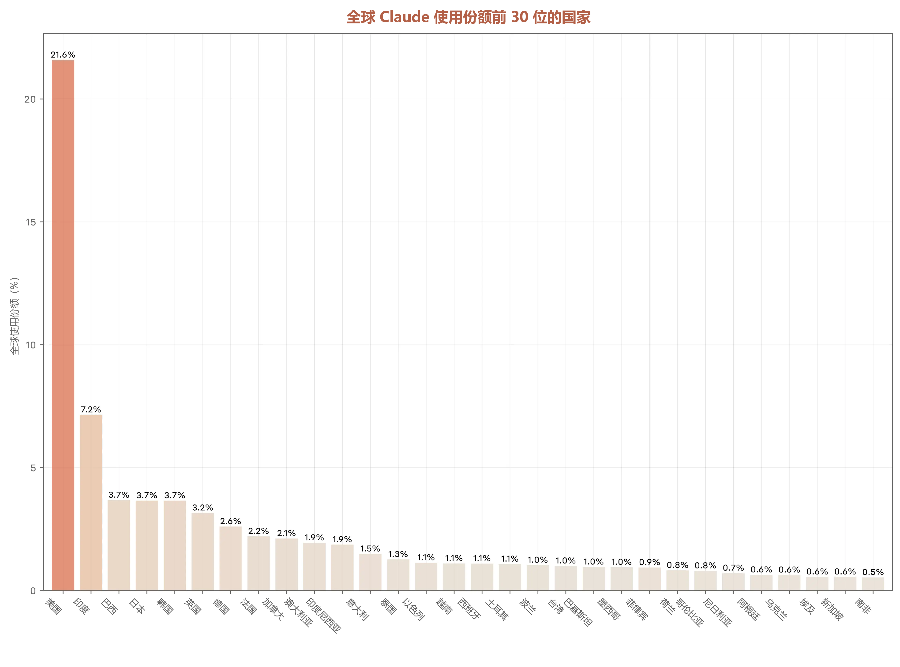
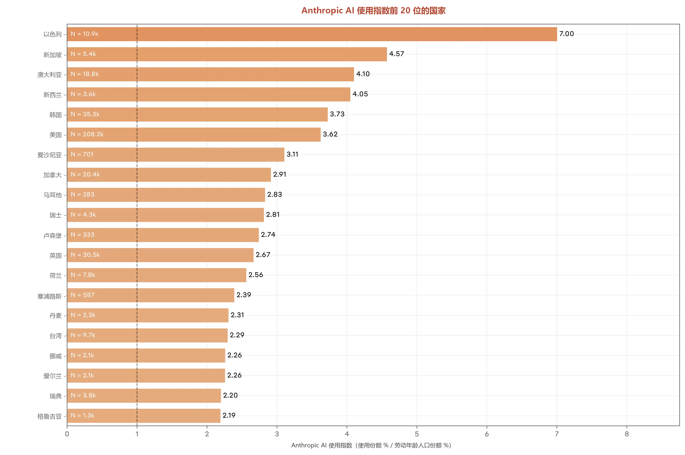
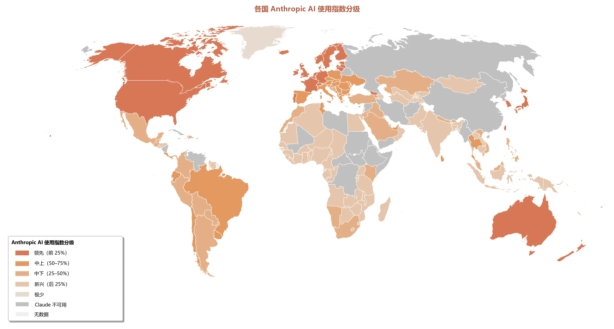
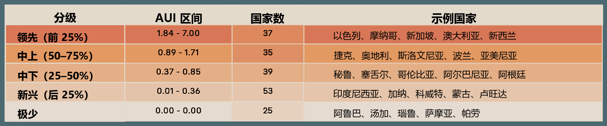
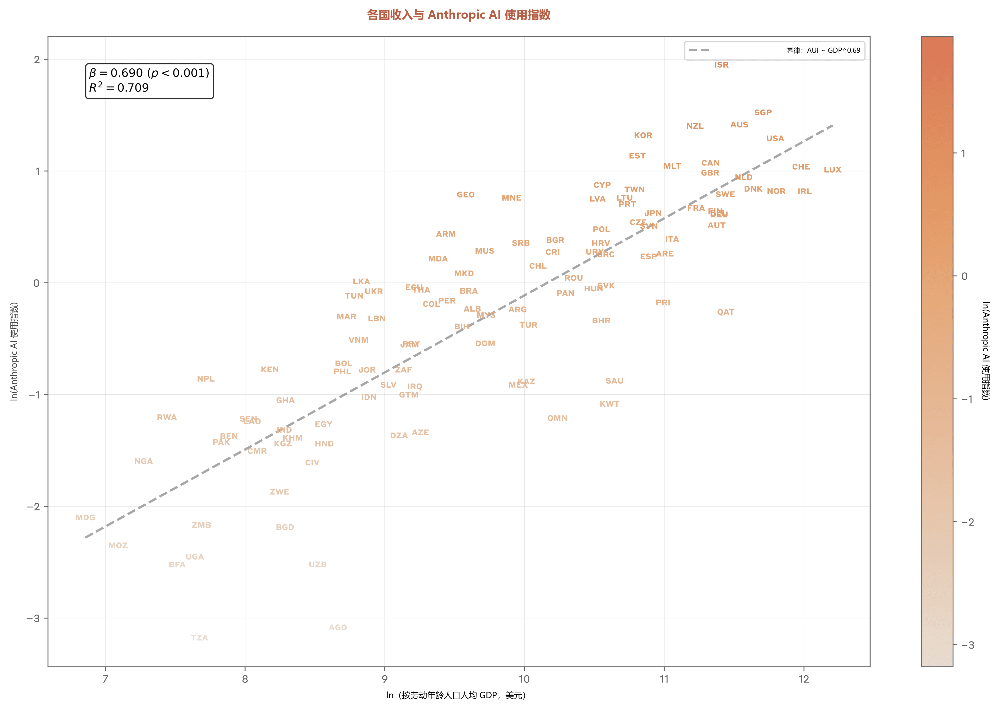
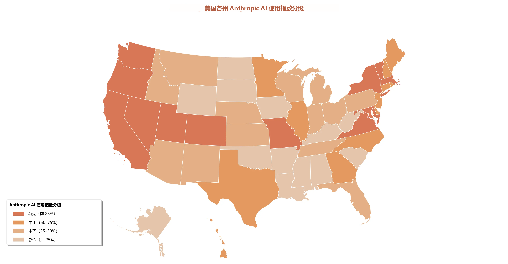
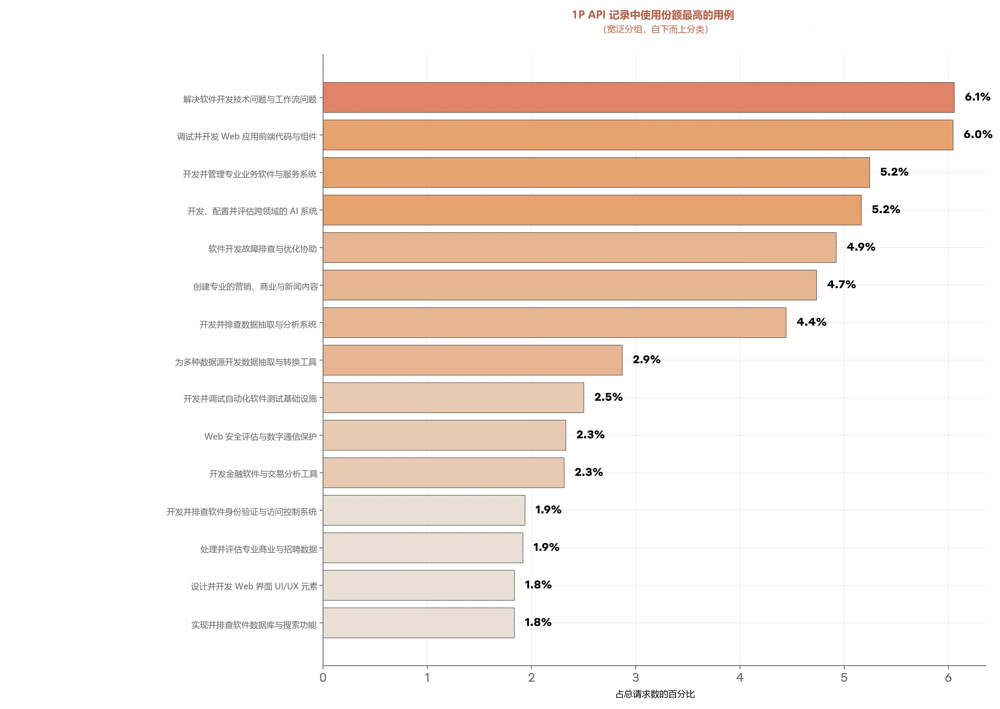
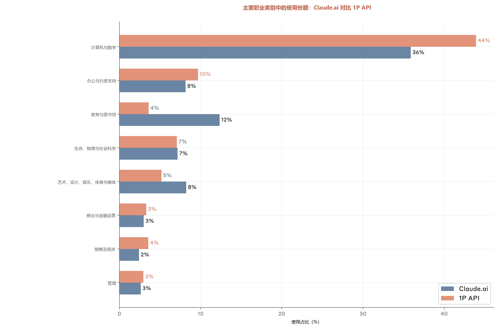

Anthropic经济指数报告：AI采用在地域和企业层面的不均衡
📖 中文摘要
专业术语注解
API：程序接口，让企业用代码直接调用AI模型服务的方式经济指数：用统计数据追踪AI在各行各业使用情况的指标体系自动化：让AI独立完成整项任务、人类很少干预的工作模式增强：人类与AI协作完成工作，AI辅助但人类主导的模式O*NET：美国政府建立的职业与任务分类数据库人均GDP：平均到每个人头上的国内生产总值，衡量经济水平📄 中文全文
- 分类： 经济研究
- 来源： https://www.anthropic.com/research/anthropic-economic-index-september-2025-report
经济研究 2025 年 9 月 15 日 下载 PDF
引言
AI 与以往技术不同之处在于其前所未有的普及速度。仅在美国，就有 40% 的员工报告在工作中使用 AI，而两年前的 2023 年这一比例为 20%。1 如此快速的普及反映了这项技术对广泛的应用场景已经非常有用、可以部署在现有数字基础设施上，并且使用简单——只需打字或说话即可，无需专门训练。前沿 AI 的快速进步很可能在这每一个维度上都进一步加速普及。 从历史上看，新技术需要数十年才能达到广泛普及。电力在都市电气化之后花了 30 多年才进入农户家庭。第一台大众市场个人电脑于 1981 年抵达早期采用者手中，但又过了 20 年才进入美国大多数家庭。即便是普及速度很快的互联网，达到 AI 仅仅用两年就实现的普及率也花了大约五年。2 为什么会这样？简而言之，新技术——即便是变革性的技术——在整个经济中扩散、消费者应用的地理集中度下降、以及企业重组业务流程以最好地释放新技术能力，都需要时间。企业先是针对一小部分任务采用新技术，然后才用于更通用的场景，这是重要的技术得以传播并产生变革性经济影响的重要方式。3 换句话说，早期技术应用的一个标志性特征是_集中_——既集中在少数地理区域，也集中在企业内少数任务上。 正如我们在本报告中记录的，AI 的应用在 21 世纪似乎也遵循着类似的模式，尽管时间线更短、强度比 20 世纪的技术扩散更大。 为了研究早期 AI 应用的此类模式，我们沿着两个重要维度扩展了 Anthropic 经济指数，引入了对 Claude.ai 对话的地理分析，以及一项史无前例的企业 API 使用研究。我们展示了 Claude 的使用如何随时间演变、不同地区的应用模式有何差异，以及——首次——企业如何部署前沿 AI 来解决业务问题。
Claude.ai 使用模式随时间的变化
在本报告的第一章中，我们识别出过去八个月中 Claude.ai 使用情况的显著变化，这些变化与底层模型能力的提升、新产品功能的推出以及 Claude 消费者群体的扩大相伴发生。 我们发现： * 教育和科学用途占比上升： 虽然用 Claude 进行编程仍然以 36% 的占比主导我们的总样本，但教育类任务从 9.3% 跃升至 12.4%，科学类任务从 6.3% 上升至 7.2%。 * 用户赋予 Claude 更多自主权： “指令式”（Directive）对话——用户将完整任务委托给 Claude——从 27% 跃升至 39%。我们看到编程中的程序创建增加（+4.5 个百分点），调试减少（-2.9 个百分点）——这表明用户或许能够在单次交流中实现更多目标。
AI 应用的地理分布
我们首次发布覆盖 150 多个国家和美国所有州的 Claude.ai 使用数据的地理切分。为了研究扩散模式，我们引入了 Anthropic AI 使用指数（AUI）来衡量 Claude.ai 的使用相对于某经济体的劳动年龄人口是被高估还是低估。 我们发现： * AUI 与国家收入高度相关： 与以往技术一样，我们看到 AI 使用在地理上高度集中。新加坡和加拿大是人均使用量最高的国家之一，分别为按人口预期的 4.6 倍和 2.9 倍。相比之下，新兴经济体使用 Claude 较少，包括印度尼西亚（0.36 倍）、印度（0.27 倍）和尼日利亚（0.2 倍）。 * 在美国，地方经济因素塑造使用模式： 华盛顿特区的人均使用量居首（是人口份额的 3.82 倍），但犹他州紧随其后（3.78 倍）。我们看到证据表明，区域使用模式反映了当地经济的独特性：例如，加州在 IT 方面的使用偏高，佛罗里达州在金融服务方面偏高，华盛顿特区在文档编辑和职业协助方面偏高。 * 领先国家的用途更加多样： 应用率较低的国家往往有更多编程用途，而高应用地区则表现出涵盖教育、科学和商业的多样化应用。例如，编程任务占印度全部使用量的一半以上，而全球约为三分之一。 * 高应用国家表现出更少的自动化、更多的增强式使用： 在控制各国任务结构后，低 AUI 国家更倾向于委托完整任务（自动化），而高应用地区则倾向于更多的学习和人机迭代（增强式使用）。
早期 AI 应用的不均衡地理分布引发了关于经济趋同的重要问题。19 世纪末和 20 世纪初的变革性技术——广泛的电气化、内燃机、室内管道——不仅开启了现代经济增长的时代，还伴随着世界各地生活水平的大幅分化。4 如果生产率收益在高应用经济体更大，那么当前的使用模式表明 AI 的好处可能会集中在已经很富裕的地区——可能加剧全球不平等，并逆转近几十年出现的增长趋同。5
系统性的企业 AI 部署
在最后一章，我们呈现了对我们第一方（1P）API 流量很大一部分的史无前例的洞察，揭示了公司和开发者使用 Claude 完成的任务。重要的是，API 用户是通过编程方式访问 Claude，而不是通过网页用户界面（如 Claude.ai）。这展示了早期采用的企业如何部署前沿 AI 能力。 我们发现： * 1P API 的使用虽然与 Claude.ai 相似，但在专门化方面有所不同： 1P API 使用和 Claude.ai 使用都高度集中在编程任务上。然而，1P API 在编程和办公室/行政任务上的使用占比更高，而 Claude.ai 在教育类和写作类任务上的占比更高。 * 1P API 使用以自动化为主导： 77% 的企业使用涉及自动化使用模式，而 Claude.ai 用户约为 50%。这反映了 API 使用的程序化特性。 * 在塑造企业部署方面，能力似乎比成本更重要： 我们 API 数据中使用最多的任务往往比不常用的任务成本更高。总体而言，我们发现了价格敏感性较弱的证据。模型能力和自动化给定任务的经济价值似乎在塑造企业使用模式方面发挥更大作用。 * 上下文制约复杂用途： 我们的分析表明，为模型整理正确的上下文对于在复杂领域进行高影响力的 AI 部署至关重要。这意味着对一些企业来说，昂贵的数据现代化和旨在获取上下文信息的组织投资可能成为 AI 应用的瓶颈。
开源数据以促进独立研究
与以往报告一样，我们开放了底层数据，以支持关于 AI 经济影响的独立研究。这一综合数据集包括 Claude.ai 和 1P API 流量的任务级使用模式（映射到 O*NET 分类法以及自下而上的类别）、按任务划分的协作模式细分，以及我们方法的详细文档。目前，地理使用模式仅适用于 Claude.ai 流量。 我们希望这些数据能帮助其他人研究的关键问题包括： * AI 使用与应用对本地劳动市场中工人和企业的影响是什么？ * 什么因素决定了各国之间以及美国国内的 AI 应用？可以采取什么措施来确保 AI 的好处不只归于已经富裕的经济体？ * 单任务成本在塑造企业部署模式方面是否发挥作用（如果有的话）？ * 为什么企业能够自动化某些任务而不能自动化其他任务？这对哪些类型的工人会获得更好或更差的就业前景有何影响？
1. Gallup 2025，《AI 在工作场所的使用两年内几乎翻倍》（AI Use at Work Has Nearly Doubled in Two Years）。 2. Bick, Blandin, Deming, 2024，《生成式 AI 的快速普及》（The Rapid Adoption of Generative AI）将 AI 的普及与个人电脑和互联网的普及进行对比；Lewis & Severnini, 2020，《农村电气化的短期和长期影响：来自美国电网历史推广的证据》（Short- and long-run impacts of rural electrification: Evidence from the historical rollout of the U.S. power grid）分析了电力进入农村地区对经济结果的影响。 3. Kalyani, Bloom, Carvalho, Hassan, Lerner and Ahmed Tahoun 2025，《新技术的扩散》（Diffusion of New Technologies）。 4. 参见 Gordon, 2012《美国经济增长结束了吗？创新乏力遭遇六大逆风》（Is U.S. Economic Growth Over? Faltering Innovation Confronts the Six Headwinds），比较了 20 世纪早期和晚期创新及其对生产率的影响。Pritchett, 1997，《大分化》（Divergence, Big Time）记录了伴随现代经济增长时代到来的经济分化。 5. Kremer, Willis, You, 2022，《趋同于趋同》（Converging to Convergence）提供了近几十年增长趋同的证据。参见 Jones, Jones, and Aghion, 2017《人工智能与经济增长》（Artificial Intelligence and Economic Growth）讨论 AI 驱动的创新自动化对增长的影响。
第一章：Claude.ai 使用随时间的变化
概述
了解 AI 应用如何随时间演变有助于预测其经济影响——从生产率收益到劳动力变化。凭借从 2024 年 12 月和 2025 年 1 月（来自我们第一份报告"V1"）、到 2025 年 2 月和 3 月（"V2"）、再到我们 2025 年 8 月的最新洞察（"V3"）的数据，我们可以追踪在过去八个月中，随着能力和产品功能的提升、新类型用户的采用以及使用方式的日益复杂，AI 使用发生了怎样的变化。我们认为下述证据表明，新产品功能催生了新的工作形式，而不仅仅是加速了现有任务的采用。
Claude.ai 经济任务使用如何变化
教育和科学任务的重要性持续上升
虽然计算机和数学任务仍然以 36% 的占比主导整体使用，但我们看到知识密集型领域的持续增长。教育指导和图书馆任务从 V1 的 9% 上升到 V3 的 12%。生命、物理和社会科学任务从 6% 增加到 7%。与此同时，商业和金融运营任务的_相对_占比从 6% 下降到 3%，管理类从 5% 下降到 3%。 这种分化表明，与传统商业运营任务相比，AI 使用可能尤其在涉及知识综合和解释的任务中快速扩散——这可能是因为这些任务更能受益于 Claude 的推理能力。
 图 1.1：Claude.ai 使用随时间的变化。 每个面板显示 Claude.ai 上抽样对话中与各 SOC 大组任务相关的占比。我们看到科学和教育任务的使用显著增加。SOC 大组按我们第一份报告中的使用量排序。
图 1.1：Claude.ai 使用随时间的变化。 每个面板显示 Claude.ai 上抽样对话中与各 SOC 大组任务相关的占比。我们看到科学和教育任务的使用显著增加。SOC 大组按我们第一份报告中的使用量排序。
新能力正在塑造使用模式
在更细的粒度上，我们记录了任务构成的变化，这些变化似乎与 V2 和 V3 之间发布的功能相关。例如，搜索电子来源和数据库大幅增长（0.03% → 0.49%），这可能反映了我们 3 月发布的网页搜索。此外，我们还看到基于互联网的研究任务增加（0.003% → 0.27%），这与我们 4 月发布的研究模式相符。1 我们还看到其他类型的变化。与开发教学材料相关的任务增加了 1.3 个百分点，从 0.2% 的基数增长到 1.5%——超过 6 倍的增长，这可能反映了教育工作者中日益增长的采用。2 创建多媒体文档上升了 0.4 个百分点，从 0.16% 几乎增长两倍至 0.55%，这可能由持续使用我们的Artifacts 功能在 Claude.ai 中构建传统和 AI 驱动的应用所推动。 有趣的是，涉及创建新代码的任务占比翻了一倍多，增加了 4.5 个百分点（从 4.1% 到 8.6%），而调试和纠错任务下降了 2.8 个百分点（从 16.1% 到 13.3%）——净变化 7.4 个百分点，从修复代码转向创建代码。这可能表明模型变得越来越可靠，用户花在修复问题上的时间更少，而更多地在一次交互中创建东西。3
指令式自动化正在加速
与以往报告一样，我们不仅追踪人们用 Claude 做什么，还追踪他们在 Claude.ai 上如何与 Claude 协作或如何向 Claude 委托任务。 在高层次上，我们区分使用 Claude 的_自动化_和_增强_两种模式： 自动化 涵盖以任务完成为中心的交互模式： * 指令式（Directive）：用户给 Claude 一个任务，Claude 以最少的来回交流完成它 * 反馈循环（Feedback Loops）：用户自动化任务并在需要时向 Claude 提供反馈
增强 侧重于协作交互模式： * 学习（Learning）：用户向 Claude 询问有关各种主题的信息或解释 * 任务迭代（Task Iteration）：用户与 Claude 协作迭代任务 * 验证（Validation）：用户就自己的工作向 Claude 征求反馈
从 Claude.ai 对话中抽样的_指令式_对话占比从 2024 年底 V1 的 27% 跃升至 V3 的 39%。这一增长主要来自_任务迭代_和_学习_交互占比的下降，意味着表现出自动化使用模式的对话占比出现了可观的净增长——在短短八个月内显著增加。这是自动化使用首次超过增强式使用的报告。
 图 1.2：各期 Anthropic 经济指数报告中协作模式的出现频率。 左面板计算表现出自动化或增强式使用形式的对话占比。右面板按协作模式细分。随着时间推移，Claude 的使用方式更趋向自动化，主要由指令式使用的增加驱动。
图 1.2：各期 Anthropic 经济指数报告中协作模式的出现频率。 左面板计算表现出自动化或增强式使用形式的对话占比。右面板按协作模式细分。随着时间推移，Claude 的使用方式更趋向自动化，主要由指令式使用的增加驱动。
一种解释是，这是模型能力提升的结果。随着模型在预判用户需求和首次尝试就产生高质量输出方面不断改进，用户可能需要的后续修正越来越少。指令式使用的跃升也可能表明人们对向 AI 委托完整任务的信心日益增强，这是一种干中学（learning-by-doing）。4 指令式使用的增长究竟归因于模型能力的提升还是干中学，可能预示着截然不同的劳动力市场影响。如果更先进的模型只是扩大了可自动化任务的集合，那么从事此类任务的工人被替代的风险就会增加。然而，如果指令式使用的增加反映的是干中学，那么最能适应新的 AI 驱动工作流程的工人可能会看到更大的需求和更高的工资。换言之，AI 可能对某些工人的好处大于其他人：它可能给那些适应技术变革能力最强的人带来更高工资，即便那些适应能力较弱的人面临工作中断。5 这将是未来研究的重要领域。
展望
V3 数据显示，AI 能力和应用正在持续推进。知识型任务，包括教育和科学应用，继续保持快速增长，新产品功能似乎正在促成不同类型的工作，而不仅仅是加速现有任务。 最引人注目的是，数据表明向 AI 系统委托任务的趋势增强——这可能是用户对技术的信任与底层模型能力提升共同作用的结果。这也可能是底层用户群体变化所致。本报告下一章首次按地理区域细分使用情况，使我们今后能够更清晰地厘清时间变化与地理变化。我们将在未来的报告中继续密切追踪这些趋势。
1. "搜索电子来源（如数据库或存储库）或人工来源以获取信息"从 0.03% 增加到 0.49%。"进行基于互联网和图书馆的研究"从 0.003% 增加到 0.27%。 2. 该统计基于包含字符串"开发教学材料"的任务计算。 3. 这些任务收集自频率变化幅度大于或等于 0.2 个百分点的任务集合。编程创建类任务包括："编写新程序或修改现有程序"（1.5% → 4.9%）、"设计、构建或维护网站"（1.2% → 2.0%）、"编写、分析、审查和重写程序"（1.2% → 0.5%）、"开发新软件应用"（0.06% → 0.6%）、"开发事务性 Web 应用"（0.1% → 0.3%）和"开发应用特定软件"（0.05% → 0.3%）。调试/纠错类任务包括："修改现有软件以纠正错误"（两个变体：2.5% → 3.8% 和 4.8% → 2.7%）、"通过进行适当更改来纠正错误"（3.0% → 2.1%）、"执行初步调试程序"（2.0% → 0.9%）、"诊断、排除和解决硬件/软件问题"（1.6% → 2.5%）、"审查和分析计算机打印输出以定位代码问题"（1.3% → 0.9%）和"确定网页或服务器问题的来源"（0.9% → 0.4%）。 4. 我们注意到，V3 使用 Claude Sonnet 4 进行分类，而 V2 使用 Sonnet 3.7，这使直接比较变得复杂。为解决这个问题，我们用 Sonnet 3.7 重新运行了 V3 数据，仍然发现指令式交互显著上升（尽管绝对水平较低，自动化率为 45%，而 Sonnet 4 为 49%）。我们还验证了这一趋势不是由任务结构变化驱动的——指令式交互的转变出现在广泛的职业类别中，表明它反映了人们与 Claude 互动方式的真实变化，而非构成效应。 5. Nelson and Phelps, 1966《人力投资、技术扩散与经济增长》（Investment in Humans, Technological Diffusion, and Economic Growth）是关于教育在帮助工人适应变化方面价值的经典参考文献。另见 Goldin and Katz, 2008《教育与技术之间的竞赛》（The Race between Education and Technology）。我们感谢 Anton Korinek 提出观察：AI 本身可能加速 AI 的扩散和经济影响，只要它扮演了过去熟练工人所扮演的角色——即弄清楚如何在新的环境中有效运用新技术。
第二章：Claude 在美国和全球的使用
概述
AI 首先在哪里被采用——以及如何使用——将塑造全世界的经济结果。通过分析 150 多个国家和美国所有州的 Claude 使用模式，我们揭示了三个关键动态：早期采用者在哪里、他们用 AI 做什么，以及随着采用走向成熟，使用方式如何演变。这些地理模式提供了关于 AI 经济扩散的真实世界证据，有助于追踪不同地区在 AI 应用上是趋同还是分化，并揭示地方经济特征如何塑造技术部署。 我们的数据基于对 100 万次 Claude.ai 对话的保护隐私1 分析2，证实了我们的一些预期，同时也挑战了另一些。美国以 21.6% 的总使用量占据主导，考虑到其规模和收入水平，这并不令人意外。但即使在按劳动年龄人口调整后，收入较高的国家往往也有较高的使用量。例如，新加坡的使用率是其劳动年龄人口所预示的 4.5 倍，而全球大片地区显示的使用量微乎其微。有趣的是，在美国国内，华盛顿特区和犹他州的人均使用量超过了加州。 我们还观察到，随着人均采用率的加深，AI 用例发生变化。人均 AI 采用率较低的国家几乎完全集中在编程任务上——印度超过一半的使用量是编程，而全球约为三分之一。随着采用走向成熟，使用趋于多样化，对教育、科学和商业运营的重视程度上升。 更引人注目的是：成熟市场倾向于更协作地使用 AI，而新兴市场更可能向其委托完整任务——这或许反映了处于不同结构转型阶段的经济体部署 AI 的方式差异。我们的数据为这些跨地理模式提供了一个窗口，并且今后将使我们能够追踪这些应用差距是缩小、扩大还是在结构上发生变化。
Claude 在全球的扩散
Claude 总使用量在美国最高
Claude 的整体采用在地理上高度集中。就全球总使用量而言，美国占比最高（21.6%），其次的使用量最高的国家占比明显更低（印度 7.2%、巴西 3.7%，见图 2.1）。然而，这种集中度受到各国人口规模的影响3——较大的国家可能仅仅因为人口规模大而拥有较大的使用份额。

图 2.1：全球 Claude.ai 使用份额领先的国家。 数据包括 Claude.ai Free 和 Pro 对话。Claude 的人均使用集中在技术先进国家
为考虑人口规模差异，我们分析按劳动年龄人口调整的使用量，引入了一个名为 Anthropic AI 使用指数（AUI）的新指标：对每个地理区域，我们计算其在 Claude 使用中的份额，以及其在劳动年龄人口（15-64 岁）中的份额。然后我们用这两个份额相除来计算 AUI： 该指数揭示各国相对于其劳动年龄人口，使用 Claude 是高于还是低于预期。AUI > 1 的区域在人口调整后的使用量高于预期，而 AUI < 1 的区域使用量较低。 结果显示出一幅引人注目的、集中在小型技术先进经济体中的模式。以色列以 7 的 Anthropic AI 使用指数领先全球人均 Claude 使用量——意味着其劳动年龄人口使用 Claude 的量是按人口预期的 7 倍。新加坡以 4.57 位居其后，澳大利亚（4.10）、新西兰（4.05）和韩国（3.73）构成人均 Claude 使用量前五名的其余部分。

图 2.2：小型技术先进国家在人均 Claude 采用方面领先。 该图显示基于 Anthropic AI 使用指数的前 20 个国家。由于随机样本中低使用国家该指标的统计不确定性，本图仅包括样本中至少有 200 个观测值的国家。底层数据包括 Claude.ai Free 和 Pro 使用。 接下来，我们基于 AUI 创建人均使用分层。我们考察随机抽样 100 万对话中至少有 200 次对话的国家，并基于四分位数设定不同使用层的阈值，即_领先_（Leading，前 25%）、中上（Upper Middle，50-75%）、中下（Lower Middle，25%-75%）和_新兴_（Emerging，后 25%）。然后我们将国家分配到基于其 AUI 的分层中，即使其观测值少于 200 个。我们将拥有人口数据但在样本中没有使用记录的国家分配到_极少_（Minimal）层。4 图 2.3 展示了全球范围的 Anthropic AI 使用指数分层，表 2.1 展示了各分层概览和国家示例。
图 2.3：Claude 的扩散因国家而异，北美、欧洲和大洋洲国家在按劳动年龄人口计算的人均 Claude 采用方面领先。 不同分层反映一个国家在本章定义的 Anthropic AI 使用指数全球分布中的位置。 5,6
表 2.1：Anthropic 经济指数分层，含示例、国家数量以及各分层的 AUI 范围。聚焦人均使用领先和新兴的国家
这种集中在人口有限、技术先进的经济体，反映了它们作为技术先驱的既有模式。例如，以色列和新加坡在全球创新指数——衡量全球各经济体创新程度的指标——中排名靠前，这表明对信息技术的总体投资使经济体能够快速采用前沿 AI。总体而言，这些经济体可以凭借其受过教育的劳动力、强大的数字基础设施和创新友好的政策，为 AI 创造肥沃的土壤。 值得注意的是主要发达经济体在 Claude 使用中的位置。美国（3.62）在人均采用方面位居领先国家之列，加拿大（2.91）和英国（2.67）的采用率相对于其人口有所上升但更为温和。其他主要经济体表现出较低采用率，包括法国 1.94、日本 1.86 和德国 1.84。 与此同时，许多中低收入经济体的 Claude 使用量微乎其微，非洲、拉丁美洲和亚洲部分地区许多国家的 Claude 采用率低于按其劳动年龄人口预期的水平。这包括玻利维亚（0.48）、印度尼西亚（0.36）、印度（0.27）和尼日利亚（0.2）。 这种使用差异反映了这些经济体之间的收入差异。我们看到 Claude 采用与按劳动年龄人口计算的国内生产总值之间存在很强的正相关（见图 2.4），人均 GDP 每增加 1% 与人均 Claude 使用量增加 0.7% 相关联。

图 2.4：各国人均 Claude 使用量与人均收入正相关。 由于随机样本中低使用国家该指标的统计不确定性，本图仅包括样本中至少有 200 个观测值的国家。坐标轴采用对数刻度，凸显幂律分布。每个国家用其 3 字母 ISO 代码表示。Claude 使用的差距可能反映多种因素的汇合，其中一些与收入相关： * 数字基础设施： 高使用国家通常拥有访问 AI 助手所需的强大互联网连接和云计算接入。 * 经济结构： 如本报告及以往报告所述，Claude 的能力非常适合知识工作者的各种典型任务。与制造业就业占比更大的低收入经济体相比，发达经济体往往有更大比例的劳动力从事此类岗位。 * 监管环境： 各国政府在多大程度上积极鼓励各行业使用 AI，以及对该技术的监管力度方面存在差异。 * 认知与获取： 与硅谷和 AI 研究社区联系更紧密的国家可能对 Claude 有更强的认知和获取渠道。 * 信任与舒适度： 公众对 AI 的信任度在不同国家之间差异很大。
Claude 在美国的扩散
在美国国内，加州以 25.3% 的使用量遥遥领先。拥有大型科技中心的其他州，如纽约（9.3%）、得克萨斯（6.7%）和弗吉尼亚（4.0%）也排名靠前。虽然没有按人口调整，但我们怀疑这些强劲的采用数字部分反映了科技中心的快速采用——这与历史上具有经济意义的技术扩散方式一致。
然而，当我们按各州人口规模调整后，这一叙事变得更加复杂。出人意料的是，哥伦比亚特区以 3.82 的 Anthropic AI 使用指数领先，表明华盛顿特区的 Claude 使用量是其全国劳动年龄人口份额的 3.82 倍。紧随其后的是犹他州（3.78），明显领先于加州（2.13）、纽约（1.58）和弗吉尼亚（1.57）。7
 图 2.5：按劳动年龄人口计算的人均 Claude 采用领先的美国州包括哥伦比亚特区、犹他、加州、纽约和弗吉尼亚。 该图显示基于 Anthropic AI 使用指数的前 20 个美国州。由于随机样本中低使用州该指标的统计不确定性，本图仅包括样本中至少有 100 个观测值的州。底层数据包括 Claude.ai Free 和 Pro 使用。
图 2.5：按劳动年龄人口计算的人均 Claude 采用领先的美国州包括哥伦比亚特区、犹他、加州、纽约和弗吉尼亚。 该图显示基于 Anthropic AI 使用指数的前 20 个美国州。由于随机样本中低使用州该指标的统计不确定性，本图仅包括样本中至少有 100 个观测值的州。底层数据包括 Claude.ai Free 和 Pro 使用。
我们记录了美国各州 Claude 采用与人均收入之间的相关关系，这与全球层面相似但较弱。收入差异只能解释跨州采用率差异不到一半。尽管相关关系较弱，我们发现 Claude 采用随收入上升得更快：州人均 GDP 每增加 1% 与 AI 使用指数增加 1.8% 相关联。

图 2.6：Claude 使用在美国各州之间存在差异，西海岸人均使用量高，但内华达、犹他、科罗拉多、密苏里和弗吉尼亚的使用量也较高。 不同分层反映一个州在本章定义的 Anthropic AI 使用指数美国分布中的位置。各国任务使用模式
我们观察到不同国家使用 Claude 的方式存在显著差异。与以往报告一样，我们用两种不同方法分析这些趋势。首先，我们根据 O*NET——一种将具体任务映射到职业和职业群体的美国分类法（例如，涉及软件调试的任务将归入计算机和数学职业群体）——将对话分类为任务。 其次，我们用 Claude 构建一个自下而上的 Claude.ai 用户请求分类法，从而洞察那些不完全符合现有分类法的使用模式。例如，请求簇"帮助撰写和改进求职信"（最低层级）汇入更高级别的簇"帮助处理求职申请、简历和职业文件"（中间层级），后者又汇入"帮助处理求职申请、简历和职业发展"（最高层级）。这两种互补方法使我们既能报告与标准劳动统计一致的结果，又能灵活捕捉标准分类法遗漏的任务。
较高的人均 Claude 使用与更多样的任务使用相关
当分析按最高层级聚合的 ONET 任务（按它们所属的标准职业分类职业群体）时，我们注意到国家之间存在巨大差异。虽然总体模式存在噪声——尤其是观测值较少的国家——图 2.7 表明，随着我们从人均 Claude 采用较低的国家转向较高的国家，使用从计算机和数学职业群体的任务（如编程）转向更多样的任务，涉及教育、办公和行政用途以及艺术等领域。我们还看到生命、物理和社会科学方面的使用增加。
![Figure 2.7: As we move from lower to higher adoption countries, Claude usage appears to shift away from programming-dominant tasks to a more diverse mix of tasks, though the overall pattern is noisy.This figure shows the relationship between the Anthropic AI Usage Index and the most frequent Standard Occupation Classification (SOC) occupation groups. Each panel shows a different SOC group. SOC share is based on how many O*NET tasks in a given geography fall into a given SOC group. The color indicates which AUI tier a country falls into. The bubble size indicates the usage count for each country. We only include countries with at least 200 observations in our sample for this figure because of the uncertainty of the measure for low-usage countries in our random sample. The regression weights every country equally.](../assets_zh/anthropic-economic-index-september-2025-report/img_011.png) 图 2.7：从采用率较低的国家到较高的国家，Claude 使用似乎从编程主导的任务转向更多样的任务组合，尽管总体模式存在噪声。 该图展示了 Anthropic AI 使用指数与最常见的标准职业分类（SOC）职业群体之间的关系。每个面板显示一个不同的 SOC 群体。SOC 份额基于某一地理区域内有多少 ONET 任务落入某个 SOC 群体。颜色表示一个国家属于哪个 AUI 分层。气泡大小表示每个国家的使用量。由于随机样本中低使用国家该指标的统计不确定性，本图仅包括样本中至少有 200 个观测值的国家。回归对每个国家赋予相同权重。
图 2.7：从采用率较低的国家到较高的国家，Claude 使用似乎从编程主导的任务转向更多样的任务组合，尽管总体模式存在噪声。 该图展示了 Anthropic AI 使用指数与最常见的标准职业分类（SOC）职业群体之间的关系。每个面板显示一个不同的 SOC 群体。SOC 份额基于某一地理区域内有多少 ONET 任务落入某个 SOC 群体。颜色表示一个国家属于哪个 AUI 分层。气泡大小表示每个国家的使用量。由于随机样本中低使用国家该指标的统计不确定性，本图仅包括样本中至少有 200 个观测值的国家。回归对每个国家赋予相同权重。
当我们查看自下而上的请求分类法时，国家特有的特征也会浮现。8 以美国、巴西、越南和印度为例，它们分别代表特定 Anthropic AI 使用指数分层中总使用量最高的国家。与全球平均水平相比，美国的用户不成比例地使用 Claude 进行家庭管理、求职搜索和医疗指导。相比之下，巴西的 Claude 用户在翻译和法律服务方面的使用量相对较高。越南超比例使用最多的请求与软件开发和教学相关，而印度超比例使用最多的请求几乎完全集中在软件开发上。这可能反映了当地的产业专业化：巴西一直是司法系统中 AI 的早期采用者，而印度拥有庞大的信息技术产业。
![Figure 2.8: Overrepresented request clusters for the United States, Brazil, Vietnam and India. A request is overrepresented in a country when the share of conversations containing that request is higher for that country than globally. For this figure, we focus on request clusters at the middle level of granularity, i.e. more aggregated than the lowest level request clusters, but less aggregated than the highest level request clusters. Only includes requests with at least 1% frequency globally and for that country.](../assets_zh/anthropic-economic-index-september-2025-report/img_012.png) 图 2.8：美国、巴西、越南和印度超比例代表的请求簇。 当某国包含某请求的对话占比高于全球水平时，该请求在该国被视为超比例代表。本图聚焦于中间粒度的请求簇，即比最低层级请求簇更聚合、但比最高层级请求簇更不聚合的级别。仅包括在全球和该国出现频率至少为 1% 的请求。
图 2.8：美国、巴西、越南和印度超比例代表的请求簇。 当某国包含某请求的对话占比高于全球水平时，该请求在该国被视为超比例代表。本图聚焦于中间粒度的请求簇，即比最低层级请求簇更聚合、但比最高层级请求簇更不聚合的级别。仅包括在全球和该国出现频率至少为 1% 的请求。
在所有国家中，软件开发都是 Claude 最常见的用途。为什么开发人员任务在整体 Claude 使用模式中持续领先？几个因素可能促成了这一效应： * 模型-任务匹配度： Claude 是一个非常强大的编程模型，可轻松部署于代码生成、调试和技术问题解决任务。 * 开发者的接受度： 开发者社区会迅速接纳新工具，这种使用通过其社交和职业网络扩散。 * 组织壁垒低： 单个开发者通常无需复杂的审批流程就能采用 Claude——这与医疗等用例形成对比。
美国各州任务使用模式
在本节中，我们探索美国各州 Claude 使用的模式，进一步洞察地方经济条件如何塑造使用模式。如上所述，跨州 Anthropic AI 使用指数差异只能解释美国各州收入差异不到一半。这表明其他区域差异——包括 Claude 能力与当地劳动力职业构成的兼容性——在决定为什么使用在某些州比在其他州更集中方面发挥着更大作用。
在一些州，我们看到证据表明当地 AI 使用模式与地方经济的独特特征相一致。当我们分析每个使用层中领先的州——领先层的加州、中上层的得克萨斯、中下层的佛罗里达和新兴层的南卡罗来纳——我们看到自下而上的请求分类法存在巨大差异（见图 2.9）。
例如，加州在与 IT 相关的请求、数字营销和翻译方面使用不成比例，这可能反映了其科技产业和语言多样的人口。加州还与基本数值任务相关的请求异常频繁，这可能代表对模型能力的测试或滥用。佛罗里达在商业建议和健身方面使用不成比例，这可能与其作为税率相对较低的金融中心以及适合户外活动的温暖气候有关。
![Figure 2.9: Overrepresented request categories for California, Texas, Florida and South Carolina. A request is overrepresented in a state when the share of conversations containing that request is higher for that state than in the US as a whole. For this figure, we focus on request clusters at the middle level of granularity, i.e. more aggregated than the lowest level request clusters, but less aggregated than the highest level request clusters. Only includes requests with at least 1% frequency in the United States and for that state.](../assets_zh/anthropic-economic-index-september-2025-report/img_013.png) 图 2.9：加州、得克萨斯、佛罗里达和南卡罗来纳超比例代表的请求类别。 当某州包含某请求的对话占比高于全美水平时，该请求在该州被视为超比例代表。本图聚焦于中间粒度的请求簇，即比最低层级请求簇更聚合、但比最高层级请求簇更不聚合的级别。仅包括在美国和该州出现频率至少为 1% 的请求。
图 2.9：加州、得克萨斯、佛罗里达和南卡罗来纳超比例代表的请求类别。 当某州包含某请求的对话占比高于全美水平时，该请求在该州被视为超比例代表。本图聚焦于中间粒度的请求簇，即比最低层级请求簇更聚合、但比最高层级请求簇更不聚合的级别。仅包括在美国和该州出现频率至少为 1% 的请求。
在美国境内，华盛顿特区在人均 Claude 使用量方面领先，其超比例的使用集中在文档编辑、信息提供和求职申请上，无论是按 O*NET 任务分类还是按自下而上的归类都是如此（见图 2.10）。例如，在华盛顿特区，求职申请类帮助的出现频率是全美平均水平的 1.84 倍。我们的交互式仪表盘可供所有人探索美国各州之间差异和模式的完整范围。
![Figure 2.10: Washington, DC has the highest Claude usage per capita, with disproportionate tasks and requests focusing on document editing, information provision and job applications. O*NET tasks refer to tasks in the O*NET taxonomy. Requests are based on the bottom-up request categories that describe what requests users make of Claude. A task or request is overrepresented in a state when the share of conversations containing that task or request is higher for that state than in the US as a whole. For this figure, we focus on request clusters at the middle level of granularity. Only includes requests with at least 1% frequency in the United States and for that state.](../assets_zh/anthropic-economic-index-september-2025-report/img_014.png) 图 2.10：华盛顿特区的人均 Claude 使用量最高，其超比例代表的任务和请求集中在文档编辑、信息提供和求职申请上 。 ONET 任务指 ONET 分类法中的任务。请求基于描述用户向 Claude 提出何种请求的自下而上请求类别。当某州包含某任务或请求的对话占比高于全美水平时，该任务或请求在该州被视为超比例代表。本图聚焦于中间粒度的请求簇。仅包括在美国和该州出现频率至少为 1% 的请求。
图 2.10：华盛顿特区的人均 Claude 使用量最高，其超比例代表的任务和请求集中在文档编辑、信息提供和求职申请上 。 ONET 任务指 ONET 分类法中的任务。请求基于描述用户向 Claude 提出何种请求的自下而上请求类别。当某州包含某任务或请求的对话占比高于全美水平时，该任务或请求在该州被视为超比例代表。本图聚焦于中间粒度的请求簇。仅包括在美国和该州出现频率至少为 1% 的请求。
人机协作的地理模式
虽然前面的章节考察了人们用 Claude 做_什么_任务，但同样具有启示性的模式出现在他们_如何_与之交互上。这里，我们使用第一章中定义的相同的增强和自动化协作模式。
各国拥有不同的任务结构，意味着它们关注不同的经济任务，这可能部分解释了自动化模式的差异。在本节中，我们研究在人均采用率低和高经济体中，自动化使用是否系统性不同——即使在控制任务结构差异的情况下。9
我们发现，即使控制一个国家的任务结构，来自不同国家的用户在对自主委托与协作交互的偏好上也表现出显著差异。随着人均 Claude 使用量的增加，各国从以自动化为重点转向以增强式使用为重点。这有些反直觉，因为我们控制的是不同国家之间更多样的任务构成。我们推测，文化和经济因素可能影响自动化占比，或者也许每个国家的早期采用者倾向于更自动化地使用 AI——但这需要更多研究。
![Figure 2.11: Countries with higher Anthropic AI Usage Index tend to use Claude in a more collaborative manner (augmentation), rather than have it operate independently (automation). This figure shows the relationship between the Anthropic AI Usage Index and the automation share in a given country. We plot the relationship after accounting for a geography's task mix, thus we show the regression residuals. We only include countries with at least 200 observations in our sample for this figure because of the uncertainty of the measure for low-usage countries in our random sample. Each country is represented by its 3-letter ISO code.](../assets_zh/anthropic-economic-index-september-2025-report/img_015.png) 图 2.11：Anthropic AI 使用指数较高的国家倾向于以更协作的方式（增强）使用 Claude，而不是让它独立运行（自动化）。 该图展示了 Anthropic AI 使用指数与某国自动化占比之间的关系。我们在考虑了某地理区域的任务结构后绘制这一关系，因此展示的是回归残差。由于随机样本中低使用国家该指标的统计不确定性，本图仅包括样本中至少有 200 个观测值的国家。每个国家用其 3 字母 ISO 代码表示。
图 2.11：Anthropic AI 使用指数较高的国家倾向于以更协作的方式（增强）使用 Claude，而不是让它独立运行（自动化）。 该图展示了 Anthropic AI 使用指数与某国自动化占比之间的关系。我们在考虑了某地理区域的任务结构后绘制这一关系，因此展示的是回归残差。由于随机样本中低使用国家该指标的统计不确定性，本图仅包括样本中至少有 200 个观测值的国家。每个国家用其 3 字母 ISO 代码表示。
结论
我们对跨地理区域 Claude 使用模式的分析揭示了几个关键洞察。最引人注目的之一是 Claude 使用的地理集中性。美国整体和加州在 Claude 使用方面的领先，以及 Claude 使用与人均收入的强相关，表明与过去技术的相似之处——在那些技术中，最初的地理集中和专门化使用是关键特征。与以往技术扩散模式的类比可能有助于我们更好地理解 AI 的扩散和影响。 令人惊讶的是，地理不仅塑造了 AI 工具被用于_什么_，还塑造了它们_如何_被使用。人均使用量相对较低的经济体中的用户相对更偏好向 Claude 委托任务（自动化），而人均使用量高的经济体中的用户则更可能偏好与 Claude 进行更协作或学习式的交互（增强），即使在控制任务结构的情况下也是如此。与任务使用中的地方专业化类似，AI 协作模式中的地方专业化表明 AI 的影响在不同地区可能非常不同。 AI 应用的地理模式——在哪里使用、用于哪些任务、如何被使用——表明，为了实现 AI 惠及全球人民的潜力，政策制定者需要关注 AI 使用和应用的地方集中性，并应对数字鸿沟加深的风险。
1. 出于隐私原因，我们的自动化分析系统会过滤掉任何单元——例如国家、（国家、任务）交叉——中对话数少于 15 次且唯一用户账户少于 5 个的单元。对于自下而上的请求簇，我们有更高的隐私过滤标准，至少需要 500 次对话和 250 个唯一账户。 2. 本节数据涵盖 2025 年 8 月 4 日至 11 日的 100 万次 Claude.ai Free 和 Pro 对话，从该期间所有未被标记为潜在信任与安全违规的对话中随机抽样。观测单位是与 Claude 在 Claude.ai 上的对话，而非用户，因此同一用户的多次对话可能被包含，尽管我们以往的工作表明，随机抽样与按用户分层抽样不会产生实质不同的结果。国家和州层面的汇总地理统计基于每次对话的 IP 地址进行评估和制表。对于地理定位，我们使用 ISO-3166 代码，因为我们的 IP 地理定位提供商使用该标准。国际位置使用 ISO-3166-1 国家代码，美国州级数据使用 ISO-3166-2 区域代码，涵盖美国全部 50 个州和华盛顿特区。我们排除了源自 VPN、任播或托管服务的对话（由我们的 IP 地理定位提供商判定）。 3. 国际位置使用 ISO-3166-1 国家代码，包括国家和部分领土。 4. 分层阈值（四分位数）在全球层面基于至少 200 个观测值的国家，在美国层面基于至少 100 个观测值的州。没有观测到使用量的国家被分配到"极少"层，因为我们不知道它们是恰好零使用，还是使用量很少而未被随机样本捕捉到。未来的工作，例如使用分层抽样，将使我们能够在较小国家和州观测值有限的情况下以更高精度探索这些模式。 5. 世界地图基于 Natural Earth 的世界地图，对争议领土采用 ISO 标准视角，这意味着地图可能不包含某些争议领土。我们注意到，除灰色显示的"Claude 不可用"国家外，我们也不在乌克兰的克里米亚、顿涅茨克、赫尔松、卢甘斯克和扎波罗热地区运营。根据国际制裁以及我们对支持乌克兰领土完整的承诺，我们的服务在俄罗斯占领区不可用。 6. "无数据"适用于部分数据缺失的国家。某些领土（如西撒哈拉、法属圭亚那）有自己的 ISO-3166 代码。其中一些有使用量，另一些没有。由于 Anthropic AI 使用指数是基于世界银行的劳动年龄人口数据按劳动年龄人口计算的，而并非所有这些领土都有现成的人口数据，我们无法为这些领土计算 AUI。 7. 在进一步调查犹他州的活动时，我们发现其使用中有相当一部分似乎可能与协同滥用有关。这还体现在其"指令式"自动化得分远高于平均水平。但我们进行了稳健性检查，相信这一活动并非驱动结果的因素。 8. 请求被过滤为全球层面至少占请求 1% 且当地层面至少占 1% 的请求。 9. 为在考虑任务构成差异的情况下隔离自动化偏好与 Claude 使用之间的关系，我们采取以下方法：首先，我们通过加权平均计算每个国家的预期自动化百分比。对每个 O*NET 任务（如编程、写作或分析），我们将该任务在该国使用中的占比乘以该任务类型的全球自动化率（全球范围内 Claude 通过指令式/反馈循环模式完成该类任务的百分比）。求和即得到给定国家具体任务结构下的预期自动化百分比。然后我们将实际自动化百分比和 AUI 分别对预期自动化百分比回归。这些回归的残差代表每个变量中无法由任务构成解释的变异。通过考察这些残差之间的关系（即偏回归分析），我们可以判断，AI 使用量高于其任务结构所预示水平的国家，是否也倾向于拥有高于预期的自动化水平。
第三章：Claude 的 API 企业部署
概述
前沿 AI 能力能否让我们更高效、重塑劳动力市场并加速增长，将取决于企业选择何时以及如何部署 AI。即使企业认识到 AI 的潜力，要有利可图地采用它，也可能需要对生产过程进行代价高昂的重组、培训新工人以及其他沉没成本投资，以促进有效部署。1 为了理解企业的 AI 应用模式，我们转向一个新的数据源：Anthropic 的第一方（1P）API 客户——同样依赖于保护隐私的方法。2 我们的 API 允许客户将 Claude 直接集成到他们自己的产品和应用中，并按使用的 token 收费，而不是收取固定订阅费。这与前两章聚焦的 Claude.ai 代表了根本不同的产品体验。 制度惯性加上采用 AI 的固定成本，表明企业早期使用 AI 的例子可能集中在部署容易、能力稳健且采用经济收益高的专门任务上。 事实上，我们在本章呈现的数据中看到了符合这一预期的证据。我们的分析揭示了几种模式： * 企业使用 Claude 的方式与个人用户相似但更加专门化： 企业将使用集中在适合程序化访问的 AI 部署任务上，如编程或行政任务。与 Claude.ai 用户相比，企业较少将 Claude 用于教育或创意任务，整体上使用方式更自动化。 * API 客户倾向于选择成本更高的任务： 尽管任务成本差异巨大，最昂贵的任务往往使用量更高，这表明模型能力、部署便利性和自动化的经济价值对采用的决定作用远大于交互本身的成本。 * 复杂的部署需要访问适当的上下文信息： 我们发现了 AI 对企业有用性的一个重要潜在瓶颈的证据。使用 Claude 处理复杂任务的 API 客户倾向于向 Claude 提供很长的输入。这可能构成更广泛企业部署的障碍，特别是对于一些依赖分散且尚未集中化或数字化的上下文的重要任务。纠正这一瓶颈可能需要企业重组组织、投资新的数据基础设施，并集中信息以实现有效的模型部署。
铺垫：公共数据中的 AI 应用模式
在深入我们的 API 数据之前，有必要先了解一下企业 AI 应用的更广阔图景。根据人口普查局的商业趋势与展望调查，美国企业的 AI 采用率在过去两年翻了一倍多，从 2023 年秋季的 3.7% 上升到 2025 年 8 月初的 9.7%（图 3.1）。3 尽管增长迅速，美国绝大多数企业并未报告在生产过程中使用 AI。
但这些总体数字掩盖了各行业之间的巨大差异。例如，2025 年 8 月初，信息行业有四分之一的商业企业报告使用 AI，大约是住宿和餐饮服务行业比例的十倍。4
这些公共数据呈现的图景很清晰：企业的 AI 使用正在快速增长，但我们仍处于 AI 应用的早期阶段。使用在经济中的分布仍然不均衡，最能快速采用并受益于该技术的行业正在这样做。
如下文所述，我们的 1P API 数据得出了互补的结论：企业早期使用 Claude 同样在经济中分布不均衡，主要部署在信息行业职业的典型任务上。
 图 3.1： 美国企业的 AI 采用率，商业趋势与展望调查（人口普查局）。注： AI 采用率计算为对以下问题回答"是"的企业比例："在过去两周内，该企业是否在生产商品或服务时使用了人工智能（AI）？（AI 示例：机器学习、自然语言处理、虚拟代理、语音识别等）"。
图 3.1： 美国企业的 AI 采用率，商业趋势与展望调查（人口普查局）。注： AI 采用率计算为对以下问题回答"是"的企业比例："在过去两周内，该企业是否在生产商品或服务时使用了人工智能（AI）？（AI 示例：机器学习、自然语言处理、虚拟代理、语音识别等）"。
Anthropic API 客户的专门化使用
为分析 API 流量，我们应用与前几章相同的保护隐私的分类方法——将匿名化的 API 记录按 ONET 任务分类，并归入自下而上的分类法。呈现的模式表明企业使用集中在特别适合自动化的专门任务上。
总体而言，软件开发主导了这一版图。在前 15 个使用簇——约占全部 API 流量的一半——中，大多数与编程和开发任务相关。调试 Web 应用和解决技术问题各占约 6% 的使用量，而构建专业商业软件则占另一大块。值得注意的是，约 5% 的 API 流量专门用于开发和评估 AI 系统本身（图 3.2）。
但并非所有 API 使用都是编程。API 客户还部署 Claude 来创建营销材料（4.7%）和处理商业与招聘数据（1.9%）。这两个类别揭示，AI 不仅被部署用于商品和服务的直接生产，还用于人才招聘和对外沟通。

ONET 分类使这些模式更加清晰。略少于一半的 API 流量映射到计算机和数学任务——比 Claude.ai 使用高出 8 个多百分点。办公和行政任务以约 10% 的记录位居第二，反映了它们适合自动化的特点。
另一方面，Claude.ai 上突出的若干交互密集型任务在 API 使用中的占比要小得多：教育和图书馆任务从 12.3% 降至 3.6%，而艺术和娱乐从 8.2% 降至 5.2%。
然而在许多情况下，Claude.ai 和 API 数据之间的职业类别相当接近，这表明在许多情况下推动采用的是底层模型能力，而非具体产品界面。

职业细分与任务专门化
尽管服务不同用户、使用不同界面，API 和 Claude.ai 的使用在任务上遵循非常相似的幂律分布。在 Claude.ai 对话中，底部 80% 的任务类别仅占使用量的 12.7%；API 客户则更集中一些，为 10.5%（图 3.4）。这些极端集中（基尼系数5 分别为 0.84 和 0.86）揭示了 AI-任务匹配度的巨大差异——匹配最好的任务的使用量比匹配差的任务高出几个数量级。
考虑到两个平台不同的用户群体和用例，这种相似性尤为惊人。两者都收敛到可比的集中度水平，表明 AI 能力与相关经济任务之间存在一个共同的匹配过程。
代码生成等任务之所以占主导，是因为它们恰好处于模型能力出色、部署障碍最小、员工可以快速采用新技术的甜蜜点。使用量稀少的长尾任务可能反映多种因素。6 例如，有些任务本身就较少见——调试软件发生的频率远高于谈判马戏团合同。极端的集中性还表明 O 型环（O-Ring）7 力量可能发挥作用：如果一个任务需要 Claude 无法处理的推理水平、企业无法访问的内部数据，或尚不存在的监管批准，那么任何单一障碍都可能阻止采用。
![Figure 3.4: Visualizing concentration of usage among a small number of tasks: Claude.ai versus 1P API. The left panel of this chart calculates Lorenz curves across O*NET tasks for both our Claude.ai and 1P API samples. The highlighted points on the curves indicate how much overall usage the bottom 80% of tasks account for. The right panel plots task rank against task usage share for tasks representing at least 0.1% of overall usage in our samples. Zipf's law, in which the coefficient of the best-fit-line is equal to -1, occurs with some regularity in various economic settings.](../assets_zh/anthropic-economic-index-september-2025-report/img_019.png) 图 3.4：使用量集中在少数任务上的可视化：Claude.ai 对比 1P API。 该图左面板为我们的 Claude.ai 和 1P API 样本计算 O*NET 任务的洛伦兹曲线。曲线上突出显示的点表示底部 80% 的任务占总体使用量的多少。右面板将任务排名对任务使用份额作图，针对样本中占总体使用量至少 0.1% 的任务。齐普夫定律（Zipf's law）——最佳拟合线系数等于 -1——在多种经济场景中以一定的规律性出现。
图 3.4：使用量集中在少数任务上的可视化：Claude.ai 对比 1P API。 该图左面板为我们的 Claude.ai 和 1P API 样本计算 O*NET 任务的洛伦兹曲线。曲线上突出显示的点表示底部 80% 的任务占总体使用量的多少。右面板将任务排名对任务使用份额作图，针对样本中占总体使用量至少 0.1% 的任务。齐普夫定律（Zipf's law）——最佳拟合线系数等于 -1——在多种经济场景中以一定的规律性出现。
API 记录中的自动化与增强
API 与 Claude.ai 使用之间最明显的区别在于人类和 AI _如何_分工。当企业将 Claude 嵌入其应用时，它们主要委托单个任务，而不是与模型迭代协作。
在我们的数据中，77% 的 API 记录表现出自动化模式（尤其是完整任务委托），而增强模式（如协作改进和学习）仅占 12%。基于 Claude.ai 对话样本，自动化与增强的比例几乎相当。纵观经济任务，通过 API 使用 Claude 的自动化程度更加显著：97% 的任务在 API 使用中表现出自动化主导模式，而 Claude.ai 上仅为 47%（图 3.6）。
这在直觉上是合理的。程序化 API 访问天然适合自动化：企业提供上下文，Claude 执行任务，输出直接流向终端用户或下游系统。
这一模式呼应了具有经济意义的技术如何变得具有变革性：嵌入到让工人无需专门技能即可获得生产率收益的系统中。虽然增强式和自动化方法都能提升人类能力，但系统级自动化可能会在整个经济中带来更大的生产率收益，也会带来劳动力市场更显著的变化：完全自动化某些任务、改变哪些任务对各种工作重要，甚至产生全新的工作形式。
![Figure 3.5: Automation versus augmentation collaboration modes across O*NET tasks: Claude.ai versus 1P API. This figure reports the share of Claude.ai conversations and 1P API transcripts that exhibit automation or augmentation patterns of usage for each O*NET task. Automation and augmentation modes are defined in Chapter 1. When for privacy-preserving reasons we do not observe usage shares for a particular collaboration mode we give that category a value of 0% in this figure. Automation dominance is defined as a task having a greater observed share of automation usage. Likewise for augmentation dominance.](../assets_zh/anthropic-economic-index-september-2025-report/img_020.png) 图 3.5：O*NET 任务中的自动化与增强协作模式：Claude.ai 对比 1P API。 该图报告每个 O*NET 任务中表现出自动化或增强使用模式的 Claude.ai 对话和 1P API 记录的占比。自动化和增强模式在第一章中定义。当出于保护隐私的原因我们未观察到某协作模式的使用份额时，本图中该类别的值为 0%。自动化主导定义为某任务观测到的自动化使用份额更大。增强主导同理。
图 3.5：O*NET 任务中的自动化与增强协作模式：Claude.ai 对比 1P API。 该图报告每个 O*NET 任务中表现出自动化或增强使用模式的 Claude.ai 对话和 1P API 记录的占比。自动化和增强模式在第一章中定义。当出于保护隐私的原因我们未观察到某协作模式的使用份额时，本图中该类别的值为 0%。自动化主导定义为某任务观测到的自动化使用份额更大。增强主导同理。
Claude 做得越多，需要知道的就越多
为什么我们的 API 客户在某些任务上比其他任务更多地使用 Claude？除了基本的模型能力之外，一个潜在的重要解释是：对某些任务来说，为成功部署向 Claude 提供所需信息更容易，而对其他任务则更难。
例如，如果目标是让 Claude 重构复杂软件开发项目中的一个模块，Claude 可能需要读取——或至少探索——整个代码库，以理解该做哪些更改、在哪里做。对于拥有集中式代码仓库的软件开发而言，获取这些信息原则上很直接。
对于其他任务，适当的上下文可能不易获得，或难以访问。例如，要求 Claude 为重要客户制定销售策略，可能需要 Claude 不仅访问客户关系管理系统中的信息，还要访问存在于客户经理、营销人员和外部联系人头脑中的隐性知识。在其他条件相同的情况下，缺乏此类上下文信息将使 Claude 的能力下降。
我们通过考察各任务的平均 API 输入长度（即提供给 Claude 的上下文）与 Claude 的平均输出长度（即模型响应的内容）之间的关系来探索这个问题。8
对我们样本中的每个 ONET 任务，我们计算相关 API 记录的平均输入和输出长度。然后将这些值除以样本中所有任务的平均长度。这为每个任务产生一个输入 token 指数和一个输出 token 指数。例如，指数值 1.5 意味着与该任务相关的 API 记录比任务平均水平长 50%。
Claude API 输出长度在不同任务之间存在相当大的差异。例如，输出长度第 90 百分位的任务比第 10 百分位的任务长 4 倍以上。表 3.1 提供了示例 ONET 任务，以及 Claude Sonnet 4 对分布该位置任务组的总结。9 图 3.7 显示输出长度在职业类别之间也存在系统性差异。
![Table 3.1: Example O*NET tasks with shorter and longer output lengths with Claude's summaries. For each O*NET task matched to 1P API traffic we calculate an output token index: Dividing the average output length across transcripts associated with that task by the average (unweighted) value across all tasks in our sample. Claude was prompted to identify tasks at the 10th, 50th, and 90th percentile of the output token index distribution with the minimal guidance: "The columns should be 'Example tasks', 'Index Value', 'Summary' where you provide a summary". Claude associated output length with task complexity.](../assets_zh/anthropic-economic-index-september-2025-report/img_021.png) 表 3.1：输出长度较短和较长的示例 O*NET 任务及 Claude 的总结。 对于匹配到 1P API 流量的每个 ONET 任务，我们计算输出 token 指数：将该任务相关记录的平均输出长度除以样本中所有任务的平均（未加权）值。Claude 被提示在极简指导下识别输出 token 指数分布第 10、50 和 90 百分位的任务："列应为'示例任务'、'指数值'、'总结'，由你提供总结"。Claude 将输出长度与任务复杂度联系起来。
表 3.1：输出长度较短和较长的示例 O*NET 任务及 Claude 的总结。 对于匹配到 1P API 流量的每个 ONET 任务，我们计算输出 token 指数：将该任务相关记录的平均输出长度除以样本中所有任务的平均（未加权）值。Claude 被提示在极简指导下识别输出 token 指数分布第 10、50 和 90 百分位的任务："列应为'示例任务'、'指数值'、'总结'，由你提供总结"。Claude 将输出长度与任务复杂度联系起来。
![Figure 3.6: Average output token index across O*NET tasks among leading occupational categories. For each O*NET task matched to 1P API traffic we calculate an output token index: Dividing the average output length across transcripts associated with that task by the average (unweighted) value across all tasks in our sample. We then average across tasks for a given top-level occupational categories in the O*NET taxonomy for top use occupational groups. 'All Other' combines remaining occupational groups into a single category.](../assets_zh/anthropic-economic-index-september-2025-report/img_022.png) 图 3.6：领先职业类别中 ONET 任务的平均输出 token 指数。 对于匹配到 1P API 流量的每个 ONET 任务，我们计算输出 token 指数：将该任务相关记录的平均输出长度除以样本中所有任务的平均（未加权）值。然后我们对使用量靠前的职业群体中 ONET 分类法给定的顶层职业类别下的任务求平均。"其他所有"将剩余职业群体合并为一个类别。
图 3.6：领先职业类别中 ONET 任务的平均输出 token 指数。 对于匹配到 1P API 流量的每个 ONET 任务，我们计算输出 token 指数：将该任务相关记录的平均输出长度除以样本中所有任务的平均（未加权）值。然后我们对使用量靠前的职业群体中 ONET 分类法给定的顶层职业类别下的任务求平均。"其他所有"将剩余职业群体合并为一个类别。
Claude 对任务的评估中突出的一个特点是：输出较长的任务往往代表日益复杂的用途。当然，输出长度并不能捕捉任务复杂度的所有维度，但它似乎是一个合理且易于测量的代理指标。
由于 API 客户对输入 token 和输出 token 都按边际定价，他们有动力在使用 Claude 时优化提示，以最小化输入和输出 token。反过来，输入长度与 Claude 产生的输出之间的任何系统性关系，部分捕捉了为复杂任务部署 Claude 时底层的上下文约束。换言之，API 客户有动力只为 Claude 提供恰好足以实现目标的上下文，不再多给。因此我们得以了解不同输出长度任务的上下文需求。
纵观各任务，我们看到 API 客户提供给 Claude 的上下文量与 Claude 实际产出的量之间存在非常稳定的关系。跨经济任务，输入长度每增加 1% 与输出长度增加 0.38%（低于同比例）相关联（图 3.7）。0.38 的弹性表明，对于这些经济上有用的任务，将更长的上下文输入转化为更长的输出存在很强的边际收益递减。10
![Figure 3.7: Scatter plot of output token index and input token index across O*NET Tasks. For each O*NET task matched to 1P API traffic we calculate an output token index: Dividing the average output length across transcripts associated with that task by the average (unweighted) value across all tasks in our sample. The input token index is constructed similarly. The elasticity of 0.38 implies that each 1% increase in the input token index is associated with a 0.38% increase in the output token index.](../assets_zh/anthropic-economic-index-september-2025-report/img_023.png) 图 3.7：O*NET 任务输出 token 指数与输入 token 指数的散点图。 对于匹配到 1P API 流量的每个 O*NET 任务，我们计算输出 token 指数：将该任务相关记录的平均输出长度除以样本中所有任务的平均（未加权）值。输入 token 指数的构造类似。0.38 的弹性意味着输入 token 指数每增加 1% 与输出 token 指数增加 0.38% 相关联。
图 3.7：O*NET 任务输出 token 指数与输入 token 指数的散点图。 对于匹配到 1P API 流量的每个 O*NET 任务，我们计算输出 token 指数：将该任务相关记录的平均输出长度除以样本中所有任务的平均（未加权）值。输入 token 指数的构造类似。0.38 的弹性意味着输入 token 指数每增加 1% 与输出 token 指数增加 0.38% 相关联。
关键在于，为复杂任务部署 AI 可能更多地受限于信息的获取，而不是底层模型能力。无法有效收集和组织上下文数据的公司可能难以进行复杂的 AI 部署，从而为更广泛的企业采用创造潜在瓶颈——尤其是对于那些隐性、分散的知识对业务运营至关重要的职业和行业。
单任务成本与任务间的替代模式
API 客户按 token 付费，这造成了不同任务部署 Claude 的成本差异。更复杂的任务因其更高的输入和输出 token 数量而往往成本更高。这种差异帮助我们探索成本是否是决定企业选择用 Claude 自动化哪些任务的主要因素。 数据显示并非如此，至少在相对意义上是这样。11 例如，计算机和数学职业的典型任务成本比销售相关任务高 50% 以上，却主导了使用量。12 总体而言，我们发现成本与使用量之间存在正相关：成本较高的任务往往使用率也较高（图 3.9）。 成本与使用量之间的正相关表明，成本在企业 AI 部署模式的塑造中作用甚微。相反，企业可能优先在模型能力强大、且 Claude 驱动的自动化能产生超过 API 成本的经济价值的领域使用。
![Figure 3.8: API cost per task and usage share across occupational categories. For each O*NET task matched to 1P API traffic we calculate an API cost index: Dividing the average API cost across transcripts associated with that task by the average (unweighted) value across all tasks in our sample. This figure plots the average API cost index across tasks in a given occupational category against usage share. The estimated elasticity of 3 implies that each 1% increase in the average cost of a task is associated with a 3% increase in prevalence in our sample.](../assets_zh/anthropic-economic-index-september-2025-report/img_024.png) 图 3.8：各职业类别的单任务 API 成本与使用份额。 对于匹配到 1P API 流量的每个 O*NET 任务，我们计算 API 成本指数：将该任务相关记录的平均 API 成本除以样本中所有任务的平均（未加权）值。该图将某职业类别中任务的平均 API 成本指数对使用份额作图。估计弹性为 3，意味着任务平均成本每增加 1% 与样本中出现率增加 3% 相关联。
图 3.8：各职业类别的单任务 API 成本与使用份额。 对于匹配到 1P API 流量的每个 O*NET 任务，我们计算 API 成本指数：将该任务相关记录的平均 API 成本除以样本中所有任务的平均（未加权）值。该图将某职业类别中任务的平均 API 成本指数对使用份额作图。估计弹性为 3，意味着任务平均成本每增加 1% 与样本中出现率增加 3% 相关联。
虽然这种正相关总体成立，我们接下来要问：在其他方面相似但成本更高的任务中，对 Claude 能力的需求是否更低。附带一个重要警示：这应被视为初步探索，而这就是我们的发现。
在控制任务特征后，我们发现成本每增加 1% 与样本中 API 记录使用频率降低 0.29% 相关联（图 3.10）。13 虽然这与标准经济理论（价格更高导致需求更低）一致，但成本下降所隐含的使用量增长是有限的。根据这一估计，某任务成本降低 10% 只会使使用量增加约 3%。
除使用 Claude 完成特定任务的成本外，其他因素似乎对使用模式的影响更大。
![Figure 3.9: Scatter plot of API cost per task and usage share controlling for task characteristics. For each O*NET task matched to 1P API traffic we calculate an API cost index: Dividing the average API cost across transcripts associated with that task by the average (unweighted) value across all tasks in our sample. We then restrict the sample to tasks appearing in both our 1P API and Claude.ai samples. This partial scatter plot controls for the following task-level characteristics: fixed effects for occupational category, collaboration mode share from Claude.ai, and indicators for whether a given collaboration mode was censored for privacy-preserving reasons in the Claude.ai sample. The estimated elasticity of -0.29 implies that each 1% increase in the API cost index for a given task is associated with a 0.29% decrease in prevalence in our sample, after controlling for task characteristics.](../assets_zh/anthropic-economic-index-september-2025-report/img_025.png) 图 3.9：控制任务特征后 API 单任务成本与使用份额的散点图。 对于匹配到 1P API 流量的每个 O*NET 任务，我们计算 API 成本指数：将该任务相关记录的平均 API 成本除以样本中所有任务的平均（未加权）值。然后将样本限制为同时出现在 1P API 和 Claude.ai 样本中的任务。该偏散点图控制以下任务级特征：职业类别固定效应、来自 Claude.ai 的协作模式占比，以及某协作模式是否因保护隐私原因在 Claude.ai 样本中被删截的指示变量。估计弹性为 -0.29，意味着在控制任务特征后，给定任务的 API 成本指数每增加 1% 与样本中出现率降低 0.29% 相关联。
图 3.9：控制任务特征后 API 单任务成本与使用份额的散点图。 对于匹配到 1P API 流量的每个 O*NET 任务，我们计算 API 成本指数：将该任务相关记录的平均 API 成本除以样本中所有任务的平均（未加权）值。然后将样本限制为同时出现在 1P API 和 Claude.ai 样本中的任务。该偏散点图控制以下任务级特征：职业类别固定效应、来自 Claude.ai 的协作模式占比，以及某协作模式是否因保护隐私原因在 Claude.ai 样本中被删截的指示变量。估计弹性为 -0.29，意味着在控制任务特征后，给定任务的 API 成本指数每增加 1% 与样本中出现率降低 0.29% 相关联。
结论
我们的 API 数据捕捉了企业 AI 采用的早期阶段：高度集中、以自动化为重点，且出人意料地对价格不敏感（至少在 API 客户用 Claude 完成的任务范围内如此）。 77% 的自动化率表明，企业使用 Claude 是为了委托任务，而非作为协作工具。这种系统性部署很可能是 AI 在经济中带来更广泛生产率收益的重要渠道。鉴于企业部署中清晰的自动化模式，这也可能带来劳动力市场的动荡，可能替代那些职责最可能面临自动化的工人。 但对劳动力市场的影响并不完全清晰。如上所述，复杂任务需要不成比例地更多上下文。这些信息可能分散在组织中。在这种情况下，对业务运营拥有隐性知识的工人可能作为复杂 AI 驱动自动化的补充而受益。14 理解 AI 采用对劳动力市场的不均衡影响是未来研究的重要领域。 希望有效采用 AI 的企业可能需要重组它们组织和维护前沿系统所依赖信息的方式。今天狭窄、以自动化为主的采用是否会演变为更广泛的部署，很可能决定 AI 未来的经济影响。
1. 在存在调整固定成本的情况下，企业面临的问题不一定是是否采用 AI，而是何时采用。参见 Hall and Kahn 2003《新技术的采用》（Adoption of New Technology）："关于这类决策最重要的一点是，在任何时间点，所做出的选择都不是采用与不采用之间的选择，而是现在采用还是推迟决定之间的选择。" 2. 本节数据涵盖 2025 年 8 月的 100 万条记录，从构成我们约一半 1P API 使用量的 1P API 客户池中随机抽样。我们继续按照我们的隐私和保留政策管理数据，我们的分析符合我们的条款、政策和合同协议。每条记录是样本期内的一对提示-响应，在某些情况下是多次往返交互的会话中间部分。 3. 请注意，这与本报告引言中的采用率衡量标准不同。消费者和员工报告的 AI 采用率在 2024 年达到 40%，而从企业层面衡量时，美国十家企业中有九家报告未使用 AI。 4. 由人口普查局发布的商业趋势与展望调查（BTOS）是美国企业 AI 采用情况的权威晴雨表。我们用于衡量 AI 采用的调查问题是："在过去两周内，该企业是否在生产商品或服务时使用了人工智能（AI）？（AI 示例：机器学习、自然语言处理、虚拟代理、语音识别等）"。参见 Crane, Green, and Soto 2025《衡量工作场所的 AI 应用》（Measuring AI Uptake in the Workplace）对 BTOS 与企业整体 AI 采用其他衡量标准的比较。 5. 基尼系数是用于量化分布（如任务使用分布）内不平等的指标。其取值范围为 0 到 1，0 表示完全平等（每个任务的使用份额完全相同），1 表示完全不平等（一个任务占全部使用量，其他任务为零）。 6. 经济环境中的幂律是一种经验规律，齐普夫定律是其中著名的例子。产生这类结果的模型既有底层异质性，也有有意的、优化的决策。更多内容参见 Gabaix 2016《经济学中的幂律：导论》（Power Laws in Economics: An Introduction）。 7. Kremer 1993《经济发展的 O 型环理论》（The O-Ring Theory of Economic Development）。 8. API 输入长度指 API 消息、系统提示以及发送给模型的任何附加内容（包括与手头任务相关的文件和数据集）中的文本。输出长度指 Claude 对 API 调用生成的响应。 9. Claude 被提示以极简的表格组织识别 ONET 任务分布第 10、50 和 90 百分位的任务："列应为'示例任务'、'指数值'、'总结'，由你提供总结"。 10. 另一个可能的促成因素是某些模型在较长上下文长度下出现的性能下降。参见 Liu et al, 2023《迷失在中间：语言模型如何使用长上下文》（Lost in the Middle: How Language Models Use Long Contexts）。 11. 本节提出的问题是，在其他条件相同的情况下，任务之间的成本差异是否塑造相对使用模式。这与研究整体 Claude 使用是否对外部竞争性定价压力敏感是不同的问题。 12. 为验证这一点，我们首先将 API 样本中识别出的 ONET 任务按宽泛职业类别聚合，以衡量整体使用份额和每个类别的平均单任务成本。与按 ONET 任务报告输入和输出 token 一样，我们将平均单任务成本按样本中观测到的任务平均值归一化。 13. 控制变量包括宽泛职业类别的固定效应，以及来自同期抽样 Claude.ai 对话的按任务协作模式占比。由于某些任务的协作模式占比被删截，我们还包含指示特定模式数据是否缺失的指标。我们将注意力限制在 API 样本和 Claude.ai 样本中都识别出的任务集合上。 14. 例如，参见 Ide and Talamaś, 2025《知识经济中的人工智能》（Artificial Intelligence in the Knowledge Economy）。
结语
这份 Anthropic 经济指数报告的第三版在关键时刻捕捉了 AI 的采用。鉴于这项技术应用的广泛性，Claude 和其他前沿 AI 系统的现有能力已经蓄势待发，将变革经济活动。快速进步的 AI 能力只会强化这样的结论：巨大的变革即将到来。然而，早期 AI 采用出人意料地不均衡。使用目前集中在一小部分任务上，存在与收入高度相关的地理差异——尤其是跨国之间。这种集中反映了 AI 能力、部署便利性和经济价值在哪里对齐：编程和数据分析使用量高，而需要分散上下文或复杂监管程序的任务则落后。 企业早期采用 Claude 一方面与消费者使用相似（编程对两者都是最常见的用途），另一方面在几个具有后果性的方面不同。特别是，通过 API 以编程方式访问 Claude，企业倾向于以更高的自动化程度使用 Claude。这种系统性的企业部署反映了 AI 将如何重塑经济活动：提高整体生产率，但对那些现有职责已被自动化的工人来说影响不确定。 这些模式有造成分化的风险。如果 AI 的生产率收益集中在已经繁荣的地区和适合自动化的行业，现有不平等可能会扩大而非缩小。如果 AI 自动化提高了拥有隐性组织知识的工人的生产率——正如我们的一些证据所表明的——那么经验丰富的工人可能会看到需求上升和工资上涨，即便入门级工人面临更差的劳动力市场前景。1 在我们此前发布的基础上，本版指数报告标志着范围和透明度方面的重大扩展。我们现在开放了全面的 API 使用数据，连同现有的 Claude.ai 消费者数据（现在包括州和国家层面的地理细分），全部与详细的任务级分类相交织。 通过公开这些数据，我们希望让其他人能够研究我们未曾考虑的问题、检验关于 AI 经济影响的假设，并制定基于实证证据的政策应对。 归根结底，变革性 AI 的经济影响既取决于技术能力，也取决于社会做出的政策选择。 历史表明，技术采用的模式并非固定不变：它们随着技术成熟、互补创新出现以及社会对其部署做出深思熟虑的选择而转变。我们今天观察到的这种高度集中使用的模式，未来可能会演变为更广泛的分布——一种能释放更多 AI 提升生产率潜力、加速落后行业创新并催生新经济价值创造形式的分布。我们仍处于这场 AI 驱动的经济转型的早期阶段。政策制定者、商业领袖和公众现在采取的行动将塑造未来的岁月。我们将随着 AI 能力的进步持续追踪这些模式，并为驾驭我们这个时代最重大的经济转型之一提供实证基础。
1. Brynjolfsson, Chandar, and Chen 2025《矿井中的金丝雀？关于人工智能近期就业影响的六个事实》（Canaries in the Coal Mine? Six Facts about the Recent Employment Effects of Artificial Intelligence）记录了明确的证据：自 2022 年底以来，AI 暴露度高的入门级工人就业前景相对更差。撇开因果性问题不谈，最直接的解释是这是由于 AI 替代了此前由早期职业工人完成的工作。Gans 2025《如果 AI 和工人是强互补品，我们会看到什么？》（If AI and workers were strong complements, what would we see?）提出了另一种解释：经验丰富工人就业增长相对更快反映了 AI 使这些工人更有生产力因而需求旺盛。AI 是补充还是替代工作，或许是我们希望数据帮助回答的最重要问题。
作者与致谢
作者
Ruth Appel、Peter McCrory、Alex Tamkin Miles McCain、Tyler Neylon、Michael Stern _主要作者。对本报告贡献相同_
致谢
有益的评论、讨论和其他帮助：Alex Sanchez, Andrew Ho, Ankur Rathi, Asa Kittner, Ben Merkel, Bianca Lindner, Biran Shah, Carl De Torres, Cecilia Callas, Daisy McGregor, Dario Amodei, Deep Ganguli, Dexter Callender III, Esin Durmus, Evan Frondorf, Heather Whitney, Jack Clark, Jakob Kerr, Janel Thamkul, Jared Kaplan, Jared Mueller, Jennifer Martinez, Kaileen Kelly, Kamya Jagadish, Katie Streu, Keir Bradwell, Kelsey Nanan, Kevin Troy, Kim O'Rourke, Kunal Handa, Landon Goldberg, Linsey Fields, Lisa Cohen, Lisa Rager, Maria Gonzalez, Mengyi Xu, Michael Sellitto, Mike Schiraldi, Olivia Chen, Paola Renteria, Rebecca Jacobs, Rebecca Lee, Ronan Davy, Ryan Donegan, Saffron Huang, Sarah Heck, Stuart Ritchie, Sylvie Carr, Tim Belonax, Tina Chin, Zoe Richards
引用
@online{appelmccrorytamkin2025geoapi,
author = {Ruth Appel and Peter McCrory and Alex Tamkin and Michael Stern and Miles McCain and Tyler Neylon},
title = {Anthropic Economic Index report: Uneven geographic and enterprise AI adoption},
date = {2025-09-15},
year = {2025},
url = {www.anthropic.com/research/anthropic-economic-index-september-2025-report},
}
相关内容
了解更多关于 Claude 的数学能力
一个未发布的研究版 Claude 在与黎曼猜想相关的问题上取得了进展。它改进了一个长期存在的下界——满足该猜想的黎曼 zeta 函数零点比例，从 41.6% 提高到 67.2%。 阅读更多
用 Claude 发现密码学弱点
密码算法。第一个攻击显著削弱了 HAWK——一种为未来量子计算机能够破解现有标准的时代而构建的数字签名方案。第二个攻击发现了一种攻击缩减轮数 AES（使用最广泛的分组密码）的新方法。 阅读更多
项目 Pilot：AI 能控制无人机吗？
我们与 Andon Labs 合作，开发了一系列新的评估，考察 AI 模型使用飞行无人机的能力，最终形成了一个新基准：Drone-Bench。 阅读更多
▸ 英文原文（点击展开）
Anthropic Economic Index report: Uneven geographic and enterprise AI adoption
- Category: Economic Research
- Source: https://www.anthropic.com/research/anthropic-economic-index-september-2025-report
Economic Research
Anthropic Economic Index report: Uneven geographic and enterprise AI adoption
Sep 15, 2025 Download PDF
Introduction
AI differs from prior technologies in its unprecedented adoption speed. In the US alone, 40% of employees report using AI at work, up from 20% in 2023 two years ago.1 Such rapid adoption reflects how useful this technology already is for a wide range of applications, its deployability on existing digital infrastructure, and its ease of use—by just typing or speaking—without specialized training. Rapid improvement of frontier AI likely reinforces fast adoption along each of these dimensions. Historically, new technologies took decades to reach widespread adoption. Electricity took over 30 years to reach farm households after urban electrification. The first mass-market personal computer reached early adopters in 1981, but did not reach the majority of homes in the US for another 20 years. Even the rapidly-adopted internet took around five years to hit adoption rates that AI reached in just two years.2 Why is this? In short, it takes time for new technologies—even transformative ones—to diffuse throughout the economy, for consumer adoption to become less geographically concentrated, and for firms to restructure business operations to best unlock new technical capabilities. Firm adoption, first for a narrow set of tasks, then for more general purpose applications, is an important way that consequential technologies spread and have transformative economic effects.3 In other words, a hallmark of early technological adoption is that it is concentrated —in both a small number of geographic regions and a small number of tasks in firms. As we document in this report, AI adoption appears to be following a similar pattern in the 21st century, albeit on shorter timelines and with greater intensity than the diffusion of technologies in the 20th century. To study such patterns of early AI adoption, we extend the Anthropic Economic Index along two important dimensions, introducing a geographic analysis of Claude.ai conversations and a first-of-its-kind examination of enterprise API use. We show how Claude usage has evolved over time, how adoption patterns differ across regions, and—for the first time—how firms are deploying frontier AI to solve business problems.
Changing patterns of usage on Claude.ai over time
In the first chapter of this report, we identify notable changes in usage on Claude.ai over the previous eight months, occurring alongside improvements in underlying model capabilities, new product features, and a broadening of the Claude consumer base. We find: * Education and science usage shares are on the rise: While the use of Claude for coding continues to dominate our total sample at 36%, educational tasks surged from 9.3% to 12.4%, and scientific tasks from 6.3% to 7.2%. * Users are entrusting Claude with more autonomy: “Directive” conversations, where users delegate complete tasks to Claude, jumped from 27% to 39%. We see increased program creation in coding (+4.5pp) and a reduction in debugging (-2.9pp)—suggesting that users might be able to achieve more of their goals in a single exchange.
The geography of AI adoption
For the first time, we release geographic cuts of Claude.ai usage data across 150+ countries and all U.S. states. To study diffusion patterns, we introduce the Anthropic AI Usage Index (AUI) to measure whether Claude.ai use is over- or underrepresented in an economy relative to its working age population. We find: * The AUI strongly correlates with income across countries: As with previous technologies, we see that AI usage is geographically concentrated. Singapore and Canada are among the highest countries in terms of usage per capita at 4.6x and 2.9x what would be expected based on their population, respectively. In contrast, emerging economies, including Indonesia at 0.36x, India at 0.27x and Nigeria at 0.2x, use Claude less. * In the U.S., local economy factors shape patterns of use: DC leads per-capita usage (3.82x population share), but Utah is close behind (3.78x). We see evidence that regional usage patterns reflect distinctive features of the local economy: For example, elevated use for IT in California, for financial services in Florida, and for document editing and career assistance in DC. * Leading countries have more diverse usage: Lower-adoption countries tend to see more coding usage, while high-adoption regions show diverse applications across education, science, and business. For example, coding tasks are over half of all usage in India versus roughly a third of all usage globally. * High-adoption countries show less automated, more augmented use: After controlling for task mix by country, low AUI countries are more likely to delegate complete tasks (automation), while high-adoption areas tend toward greater learning and human-AI iteration (augmentation).
The uneven geography of early AI adoption raises important questions about economic convergence. Transformative technologies of the late 19th century and the early 20th centuries—widespread electrification, the internal combustion engine, indoor plumbing—not only ushered in the era of modern economic growth but accompanied a large divergence in living standards around the world.4 If the productivity gains are larger for high-adoption economies, current usage patterns suggest that the benefits of AI may concentrate in already-rich regions—possibly increasing global economic inequality and reversing growth convergence seen in recent decades.5
Systematic enterprise deployment of AI
In the final chapter, we present first-of-its-kind insight on a large fraction of our first-party (1P) API traffic, revealing the tasks companies and developers are using Claude to accomplish. Importantly, API users access Claude programmatically, rather than through a web user interface (as with Claude.ai). This shows how early-adopting businesses are deploying frontier AI capabilities. We find: * 1P API usage, while similar to Claude.ai use, differs in specialized ways: Both 1P API usage and Claude.ai usage focus heavily on coding tasks. However, 1P API usage is higher for coding and office/admin tasks, while Claude.ai usage is higher for educational and writing tasks. * 1P API usage is automation dominant: 77% of business uses involve automation usage patterns, compared to about 50% for Claude.ai users. This reflects the programmatic nature of API usage. * Capabilities seem to matter more than cost in shaping business deployment: The most-used tasks in our API data tend to cost more than the less frequent ones. Overall, we find evidence of weak price sensitivity. Model capabilities and the economic value of feasibly automating a given task appears to play a larger role in shaping businesses’ usage patterns. * Context constrains sophisticated use: Our analysis suggests that curating the right context for models will be important for high-impact deployments of AI in complex domains. This implies that for some firms costly data modernization and organizational investments to elicit contextual information may be a bottleneck for AI adoption.
Open source data to catalyze independent research
As with previous reports, we have open-sourced the underlying data to support independent research on the economic effects of AI. This comprehensive dataset includes task-level usage patterns for both Claude.ai and 1P API traffic (mapped to the O*NET taxonomy as well as bottom-up categories), collaboration mode breakdowns by task, and detailed documentation of our methodology. At present, geographic usage patterns are only available for Claude.ai traffic. Key questions we hope this data will help others to investigate include: * What are the local labor market consequences for workers and firms of AI usage & adoption? * What determines AI adoption across countries and within the US? What can be done to ensure that the benefits of AI do not only accrue to already-rich economies? * What role, if any, does cost-per-task play in shaping enterprise deployment patterns? * Why are firms able to automate some tasks and not others? What implications does this have for which types of workers will experience better or worse employment prospects?
1. Gallup 2025, AI Use at Work Has Nearly Doubled in Two Years. 2. Bick, Blandin, Deming, 2024 The Rapid Adoption of Generative AI benchmark AI adoption against adoption of PC and the internet; Lewis & Severnini, 2020 Short- and long-run impacts of rural electrification: Evidence from the historical rollout of the U.S. power grid analyze the impact of bringing electricity to rural areas on economic outcomes. 3. Kalyani, Bloom, Carvalho, Hassan, Lerner and Ahmed Tahoun 2025 Diffusion of New Technologies. 4. See Gordon, 2012 Is U.S. Economic Growth Over? Faltering Innovation Confronts the Six Headwinds for a comparison of early and late 20th century innovations and their impact on productivity. Pritchett, 1997. Divergence, Big Time documents economic divergence that accompanied transition to era of modern economic growth. 5. Kremer, Willis, You, 2022 Converging to Convergence present evidence of growth convergence in recent decades. See Jones, Jones, and Aghion, 2017 Artificial Intelligence and Economic Growth for discussion of growth implications AI-powered automation of innovation.
Chapter 1: Claude.ai usage over time
Overview
Understanding how AI adoption evolves over time can help predict its economic impacts—from productivity gains to workforce changes. With data spanning from December 2024 and January 2025 (from our first report, ‘V1’) to February and March 2025 (‘V2’) to our newest insights from August 2025 (‘V3’), we can track how AI usage has shifted over the past eight months as capabilities and product features have improved, new kinds of users have adopted the technology, and uses have become more sophisticated. We view the evidence presented below as suggesting that new product features have enabled new forms of work rather than simply accelerating adoption for existing tasks.
How Claude.ai usage for economic tasks has changed
Educational and scientific tasks continue their rise in relative importance
While computer and mathematical tasks still dominate overall usage at 36%, we are seeing sustained growth in knowledge-intensive fields. Educational Instruction and Library tasks rose from 9% in V1 to 12% in V3. Life, Physical, and Social Science tasks increased from 6% to 7%. Meanwhile, the relative share of Business and Financial Operations tasks fell from 6% to 3%, and Management dropped from 5% to 3%. This divergence suggests AI usage may be diffusing especially quickly among tasks involving knowledge synthesis and explanation, compared to traditional business operations—possibly because these tasks benefit more from Claude's reasoning capabilities.
Figure 1.1: Claude.ai usage over time. Each panel shows the share of sampled conversations on Claude.ai associated with tasks from each SOC major group. We see notable increases in usage for scientific and educational tasks. SOC major groups ranked by usage in our first report.
New capabilities are shaping usage patterns
At a more granular level, we document changes in task composition that appear linked to features launched between V2 and V3. For example, searching electronic sources and databases grew substantially (0.03% → 0.49%), likely reflecting our web search release in March. In addition, we also see a rise in internet-based research tasks (0.003% → 0.27%), which aligns with the Research mode we released in April.1 We also see other kinds of changes. Tasks relating to developing instructional materials increased by 1.3pp, growing from a base of 0.2% to 1.5%—a more than 6-fold increase that may reflect growing adoption among educators.2 Creating multimedia documents rose 0.4pp, nearly tripling from 0.16% to 0.55%, potentially driven by continued use of our Artifacts feature for building traditional and AI-powered apps within Claude.ai. Interestingly, the share of tasks involving creating new code more than doubled, increasing by 4.5 percentage points (from 4.1% to 8.6%), while debugging and error correction tasks fell by 2.8 percentage points (from 16.1% to 13.3%)—a net 7.4pp shift toward creation over fixing code. This may suggest that models have become increasingly reliable, such that users spend less time fixing problems and more time creating things in a single interaction.3
Directive automation is accelerating
As in previous reports, we also track not just what people use Claude for but how they collaborate with or delegate to Claude on Claude.ai. At a high level, we distinguish between automation and augmentation modes of using Claude: Automation encompasses interaction patterns focused on task completion: * Directive : Users give Claude a task and it completes it with minimal back-and-forth * Feedback Loops : Users automate tasks and provide feedback to Claude as needed
** Augmentation focuses on collaborative interaction patterns: * Learning : Users ask Claude for information or explanations about various topics * Task Iteration : Users iterate on tasks collaboratively with Claude * Validation** : Users ask Claude for feedback on their work
The share of directive conversations sampled from Claude.ai conversations jumped from 27% in V1 in late 2024 to 39% in V3. This increase came primarily at the expense of task iteration and learning interactions, implying a sizable net increase in the share of conversations exhibiting automative patterns of use – a notable increase in just eight months. This is the first report where automation usage exceeds augmentation usage.
Figure 1.2: Collaboration mode frequencies across Anthropic Economic Index Reports. The left panel calculates the share of conversations exhibiting either automation or augmentation forms of use. The right panel breaks this out by collaboration mode. Claude tends to be used in more automated ways over time, driven primarily by an increase in directive use.
One interpretation is that this is a result of increasing model capabilities. As models improve at anticipating user needs and producing high-quality outputs on first attempts, users may need fewer follow-up refinements. The jump in directive usage could also signal growing confidence in delegating complete tasks to AI, a form of learning-by-doing.4 Whether the growth in directive usage is attributable to improving model capabilities or learning-by-doing could signal very different labor market implications. If more advanced models simply expand the set of automated tasks, then the risk increases that workers performing such tasks will be displaced. However, if instead the rise in directive use reflects learning-by-doing, then workers most able to adapt to new AI-powered workflows are likely to see greater demand and higher wages. In other words, AI may benefit some workers more than others: it may lead to higher wages for those with the greatest ability to adapt to technological change, even as those with lower ability to adapt face job disruption.5 This will be an important area of inquiry for future research.
Looking ahead
The V3 data reveals that AI capabilities and adoption are continuing to progress. Knowledge-based tasks, including educational and scientific applications, continue their fast growth rate, and new product features appear to be enabling different types of work rather than just accelerating existing tasks. Most strikingly, the data point toward increased delegation of tasks to AI systems–perhaps due to some combination of user trust in the technology as well as improvement of underlying model capabilities. This could also be due to changes in the underlying user base. The next chapter of this report for the first time breaks down usage across geography, allowing us to disentangle temporal vs. geographic changes more clearly going forward. We will continue to track these trends closely in future reports. 1. “Search electronic sources, such as databases or repositories, or manual sources for information” increased from 0.03% to 0.49%. “Conduct internet-based and library research” increased from 0.003% to 0.27%. 2. Statistic computed from tasks containing the string “develop instructional materials”. 3. Tasks were collated from the set of tasks whose frequency has changed by a magnitude greater than or equal to 0.2 percentage points. Programming creation tasks include: “write new programs or modify existing programs” (1.5% → 4.9%), “design, build, or maintain web sites” (1.2% → 2.0%), “write, analyze, review, and rewrite programs” (1.2% → 0.5%), “develop new software applications” (0.06% → 0.6%), “develop transactional web applications” (0.1% → 0.3%), and “develop application-specific software” (0.05% → 0.3%). Debugging/error correction tasks include: “modify existing software to correct errors” (two variants: 2.5% → 3.8% and 4.8% → 2.7%), “correct errors by making appropriate changes” (3.0% → 2.1%), “perform initial debugging procedures” (2.0% → 0.9%), “diagnose, troubleshoot, and resolve hardware/software problems” (1.6% → 2.5%), “review and analyze computer printouts to locate code problems” (1.3% → 0.9%), and “determine sources of web page or server problems” (0.9% → 0.4%). 4. We note that V3 uses Claude Sonnet 4 for classification, while V2 used Sonnet 3.7, which complicates direct comparison. To address this, we reran V3 data with Sonnet 3.7 and still found directive interactions rising significantly (though to a lower absolute level of 45% automation versus 49% with Sonnet 4). We also verified this trend is not driven by changes in task mix—the shift toward directive interactions appears across a wide range of occupational categories, suggesting it reflects genuine changes in how people interact with Claude rather than compositional effects. 5. Nelson and Phelps, 1966 Investment in Humans, Technological Diffusion, and Economic Growth is a classic reference for the value of education in equipping workers to adapt to change. See also Goldin and Katz, 2008 The Race between Education and Technology. We thank Anton Korinek for the observation that AI itself might accelerate the diffusion and economic impact of AI to the extent that it plays the role that skilled workers played in the past in figuring out how to effectively wield new technologies in novel settings.
Chapter 2: Claude usage across the United States and the globe
Overview
Where AI gets adopted first—and how it’s used—will shape economic outcomes across the world. By analyzing Claude usage patterns across 150+ countries and all US states, we uncover three key dynamics: where early adopters are, what they’re using AI for, and how usage evolves as adoption matures. These geographic patterns provide real-world evidence about AI’s economic diffusion, helping track whether different regions are converging or diverging in their AI adoption, and revealing how local economic characteristics shape technology deployment. Our data, relying on a privacy-preserving1 analysis of 1 million Claude.ai conversations2 , confirmed some of our expectations while challenging others. The US dominates total usage at 21.6%, which is unsurprising given its size and high income. But even when adjusting for the working-age population size, higher-income countries tend to have higher usage. For example, Singapore’s usage rate is 4.5 times what its working-age population would suggest, while large regions of the globe show minimal usage. Interestingly, within the US, DC and Utah outpace California in usage per capita. We also observe changes in AI use cases as adoption per capita deepens. Countries with lower AI adoption per capita concentrate overwhelmingly on coding tasks—over half of all usage in India, compared to roughly a third globally. As adoption matures, usage diversifies, with a rising emphasis on education, science, and business operations. Even more striking: mature markets tend to use AI more collaboratively, while emerging markets are more likely to delegate complete tasks to it—perhaps reflecting differences in how AI is deployed by economies at different stages of structural transformation. Our data provides a window into these patterns across geographies, and going forward, will enable us to track whether these adoption gaps narrow, widen, or change in structure over time.
Claude diffusion across the globe
Total Claude usage is highest in the US
Claude adoption overall is highly geographically concentrated. In terms of total global usage, the United States accounts for the highest share (21.6%), with the next highest usage countries showing significantly lower shares (India at 7.2%, Brazil at 3.7%, see Figure 2.1). However, this concentration is affected by the population size of each country3 – larger countries may have larger usage shares purely because of their population size.
Figure 2.1: Leading countries in terms of global Claude.ai usage share. The data includes Claude.ai Free and Pro conversations.
Per capita usage of Claude is concentrated in technologically advanced countries
To account for differences in population size, we analyze usage adjusted for the working-age population, introducing a new measure called the Anthropic AI Usage Index (AUI): For each geography, we calculate its share of Claude usage, and its share of the working-age population (ages 15-64). We then calculate the AUI by dividing these shares:
This index reveals whether countries use Claude more or less than expected relative to their working-age population. A region with an AUI > 1 has higher usage than expected after adjusting for population, while a region with an AUI < 1 has lower usage.
The results reveal a striking pattern of concentration among small, technologically advanced economies. Israel leads global per capita Claude usage with an Anthropic AI Usage Index of 7 — meaning its working-age population uses Claude 7x more than expected based on its population. Singapore follows at 4.57, while Australia (4.10), New Zealand (4.05) and South Korea (3.73) round out the top five countries in terms of per capita Claude usage.
Figure 2.2: Small, technologically advanced countries are leading in Claude adoption per capita. The figure shows the top 20 countries based on the Anthropic AI Usage Index. We only include countries with at least 200 observations in our sample for this figure because of the uncertainty of the measure for low-usage countries in our random sample. The underlying data includes Claude.ai Free and Pro usage.
Next, we create per capita usage tiers based on the AUI. We look at countries with at least 200 conversations in our random sample of 1 million conversations, and set thresholds for different usage tiers-based quartiles, i.e. Leading (top 25%), Upper Middle (50-75%), Lower Middle (25%-75%) and Emerging (bottom 25%). We then assign countries, even if they have fewer than 200 observations, to a tier based on their AUI. We assign countries for which we have population data, but no usage in our sample, to a Minimal tier.4 Figure 2.3 illustrates the Anthropic AI Usage Index tiers across the globe, Table 2.1 shows an overview of the tiers and country examples.
Figure 2.3: Claude diffusion varies across countries, with countries in North America, Europe and Oceania leading in Claude adoption per working-age capita. The different tiers reflect a country’s position within the global distribution of the Anthropic AI Usage Index as defined in this chapter. 5,6
Table 2.1: Anthropic Economic Index tiers with examples, number of countries, and AUI range for each tier.
Zooming into leading and emerging countries in terms of per capita usage
This concentration in advanced economies with limited population sizes reflects their established patterns as technology pioneers. For example, both Israel and Singapore rank highly in the Global Innovation Index—a measure of how innovative different economies across the globe are—suggesting that general investments in information technology position economies well for rapid adoption of frontier AI. Overall, these economies can leverage their educated workforces, robust digital infrastructure, and innovation-friendly policies to create fertile conditions for AI.
Notable is the position of major developed economies in Claude usage. The United States (3.62) ranks among leading countries in terms of per capita adoption, with Canada (2.91) and the United Kingdom (2.67) having elevated but more moderate rates of adoption as compared to their population. Other major economies show lower adoption, including France at 1.94, Japan at 1.86, and Germany at 1.84.
Meanwhile, many lower and middle-income economies show minimal Claude usage, with many countries across Africa, Latin America, and parts of Asia showing Claude adoption below what would be expected based on their working-age population. This includes Bolivia (0.48), Indonesia (0.36), India (0.27), and Nigeria (0.2).
This variation in usage is reflective of income differences across these economies. We see a strong positive correlation between Claude adoption and Gross Domestic Product per working-age capita (see Figure 2.4), with a 1% increase in GDP per capita being associated with a 0.7% increase in Claude usage per capita.
Figure 2.4: Claude usage per capita is positively correlated with income per capita across countries. We only include countries with at least 200 observations in our sample for this figure because of the uncertainty of the measure for low-usage countries in our random sample. Axes are on a log scale, highlighting a power law distribution. Each country is represented by its 3-letter ISO code.
The disparities in Claude usage likely reflect a confluence of factors, some of which are correlated with income: * Digital infrastructure: High-usage countries typically have robust internet connectivity and cloud computing access needed to access AI assistants. * Economic structure: As documented in this and previous reports, Claude capabilities are well-suited to various tasks typical of knowledge workers. Advanced economies tend to have a greater share of the workforce in such roles as compared to lower-income economies with a larger employment share in manufacturing. * Regulatory environment: Governments differ in how actively they encourage the use of AI across different industries and in how heavily they regulate the technology. * Awareness and access: Countries with stronger connections to Silicon Valley and AI research communities may have greater awareness of and access to Claude. * Trust and comfort: Public opinion on trust in AI varies substantially across countries.
Claude diffusion across the United States
Within the US, California overwhelmingly leads with 25.3% of usage. Other states with major tech centers like New York (9.3%), Texas (6.7%), and Virginia (4.0%) also rank highly. Though not adjusted for population, we suspect that these strong adoption figures partly reflect rapid adoption in technology hubs—in keeping with how economically consequential technologies have historically tended to diffuse.
This narrative becomes more complex, however, when we adjust for the population size of each state. Surprisingly, the District of Columbia leads with an Anthropic AI Usage Index of 3.82, indicating that Claude usage in DC is 3.82x greater than its share of the country’s working-age population. Closely following is Utah (3.78), notably ahead of California (2.13), New York (1.58) and Virginia (1.57).7
Figure 2.5: Leading US states in terms of Claude adoption per working-age capita include the District of Columbia, Utah, California, New York and Virginia. The figure shows the top 20 US states based on the Anthropic AI Usage Index. We only include states with at least 100 observations in our sample for this figure because of the uncertainty of the measure for low-usage states in our random sample. The underlying data includes Claude.ai Free and Pro usage.
We document a similar, but weaker correlation than at the global level between Claude adoption and income per capita across US states. Income differences explain less than half the variation in cross-state adoption rates. Despite this weaker correlation, we find that Claude adoption rises faster with income: Each 1% increase in state GDP per capita is associated with a 1.8% increase in the AI Usage Index.
Figure 2.6: Claude usage varies across US states, with high per-capita usage in the West Coast, but also higher usage in Nevada, Utah, Colorado, Missouri, and Virginia. The different tiers reflect a US state’s position within the US distribution of the Anthropic AI Usage Index as defined in this chapter.
Task usage patterns across countries
We observe notable variation in how Claude is used in different countries. As in past reports, we analyze these trends using two different approaches. First, we classify conversations into tasks according to O*NET, a US taxonomy that maps specific tasks to occupations and occupation groups (e.g., a task involving software debugging would fall into the Computer and Mathematical occupation group). Second, we use Claude to construct a bottom-up taxonomy of user requests on Claude.ai, which provides insight into usage patterns that do not fit neatly into existing taxonomies. For example, the request cluster “help write and improve cover letters for job applications” (lowest level) feeds into the higher-level cluster “help with job applications, resumes, and career documents” (middle level), which in turn feeds into the cluster “help with job applications, resumes, and career advancement” (highest level). These two complementary approaches allow us to both report results aligned with standard labor statistics, and provide flexibility to capture tasks that standard taxonomies miss.
Higher per capita Claude usage is associated with more diverse task usage
When analyzing ONET tasks aggregated at the highest level (in terms of the Standard Occupation Classification occupation groups they belong to), we notice strong variation across countries. While the overall pattern is noisy–especially for countries with fewer observations–Figure 2.7 suggests that as we progress from lower to higher per capita Claude adoption, usage shifts away from tasks in the Computer and Mathematical occupation group (e.g., programming) to more diverse tasks in areas such as education, office and administrative uses, and arts. We also see increased usage in the life, physical and social sciences.
Figure 2.7: As we move from lower to higher adoption countries, Claude usage appears to shift away from programming-dominant tasks to a more diverse mix of tasks, though the overall pattern is noisy. This figure shows the relationship between the Anthropic AI Usage Index and the most frequent Standard Occupation Classification (SOC) occupation groups. Each panel shows a different SOC group. SOC share is based on how many ONET tasks in a given geography fall into a given SOC group. The color indicates which AUI tier a country falls into. The bubble size indicates the usage count for each country. We only include countries with at least 200 observations in our sample for this figure because of the uncertainty of the measure for low-usage countries in our random sample. The regression weights every country equally.
Country idiosyncrasies also emerge when looking at our bottom-up request taxonomy.8 Take, for example, the United States, Brazil, Vietnam, and India, which represent the country with the highest total usage within a given Anthropic AI Usage Index tier. Users in the United States disproportionately use Claude for household management purposes, to search for jobs, and for medical guidance compared to the global average. By contrast, Claude users in Brazil have comparatively high usage for both translation and legal services. Vietnam’s top disproportionate requests are related to software development and education, and India’s top disproportionate requests focus almost exclusively on software development. This likely reflects local specialization: Brazil has been an early adopter of AI in the judicial system, and India has a large information technology sector.
Figure 2.8: Overrepresented request clusters for the United States, Brazil, Vietnam and India. A request is overrepresented in a country when the share of conversations containing that request is higher for that country than globally. For this figure, we focus on request clusters at the middle level of granularity, i.e. more aggregated than the lowest level request clusters, but less aggregated than the highest level request clusters. Only includes requests with at least 1% frequency globally and for that country.
Across all countries, software development emerges as the most common use of Claude. Why do developer tasks consistently lead in overall Claude usage patterns? Several factors likely contribute to this effect: * Model-task fit: Claude is a very strong coding model and readily deployed across code generation, debugging, and technical problem-solving tasks. * Developer receptivity: Developer communities embrace new tools rapidly, and this usage diffuses through their social and professional networks. * Low organizational barriers: Individual developers can typically adopt Claude without complex approval processes—in contrast to, say, medical use cases.
Task usage patterns across the United States
In this section we explore patterns of Claude usage across states within the US, giving us further insight into how local economic conditions shape usage patterns. As we discuss above, cross-state differences in the Anthropic AI Usage Index account for less than half of the variation in income differences across US states. This suggests that other regional differences—including the compatibility of Claude capabilities with the occupational composition of the local workforce—play a larger role in determining why usage is more concentrated in some states than others.
In a number of states, we see evidence that local patterns of AI use aligns with distinctive features of the local economy. When analyzing the top states in each usage tier—California for leading, Texas for upper middle, Florida for lower middle, and South Carolina for emerging—we see strong variation in terms of our bottom-up request taxonomy (see Figure 2.9).
For example, California shows disproportionate use for IT-related requests, digital marketing and translation, likely reflecting its tech sector and linguistically diverse population. California also has disproportionately frequent requests for help with basic numerical tasks, which may represent tests of model capabilities or abuse. Florida sees disproportionate use for business advice and fitness, potentially tied to its role as a financial hub with relatively low tax rates and a warm climate amenable to outdoor activities.
Figure 2.9: Overrepresented request categories for California, Texas, Florida and South Carolina. A request is overrepresented in a state when the share of conversations containing that request is higher for that state than in the US as a whole. For this figure, we focus on request clusters at the middle level of granularity, i.e. more aggregated than the lowest level request clusters, but less aggregated than the highest level request clusters. Only includes requests with at least 1% frequency in the United States and for that state.
Within the US, D.C. leads in terms of per capita Claude usage, with a disproportionate focus on document editing, information provision and job applications across both the ONET task classification and bottom-up categorization (see Figure 2.10). For example, help with job applications is 1.84x as common in DC as in the US overall. Our interactive dashboard allows everyone to explore the full range of variation and patterns across US states.
Figure 2.10: Washington, DC has the highest Claude usage per capita, with disproportionate tasks and requests focusing on document editing, information provision and job applications . ONET tasks refer to tasks in the O*NET taxonomy. Requests are based on the bottom-up request categories that describe what requests users make of Claude. A task or request is overrepresented in a state when the share of conversations containing that task or request is higher for that state than in the US as a whole. For this figure, we focus on request clusters at the middle level of granularity. Only includes requests with at least 1% frequency in the United States and for that state.
Geographic patterns in human-AI collaboration
While previous sections examined what tasks people use Claude for, an equally revealing pattern emerges in how they interact with it. Here, we use the same augmentation and automation collaboration patterns as defined in Chapter 1.
Countries have different task mixes, meaning that they focus on different economic tasks, which may partly explain differences in automation patterns. In this section, we investigate whether automated use is systematically different among low and high per capita adoption economies—even when controlling for differences in task mix.9
We find that even when controlling for the task mix of a country, users from different countries show notably different preferences for autonomous delegation versus collaborative interaction. As Claude usage per capita increases, countries shift from automation-focused to augmentation-focused usage. This is somewhat counter-intuitive, since we are controlling for the more diverse task composition across different countries. We speculate that cultural and economic factors might affect the automation share, or perhaps that early adopters in each country tend to use AI in a more automotive way—but more research is needed here.
Figure 2.11: Countries with higher Anthropic AI Usage Index tend to use Claude in a more collaborative manner (augmentation), rather than have it operate independently (automation). This figure shows the relationship between the Anthropic AI Usage Index and the automation share in a given country. We plot the relationship after accounting for a geography’s task mix, thus we show the regression residuals. We only include countries with at least 200 observations in our sample for this figure because of the uncertainty of the measure for low-usage countries in our random sample. Each country is represented by its 3-letter ISO code.
Conclusion
Our analysis of Claude usage patterns across geographies reveals several key insights. One of the most striking is the geographic concentration of Claude usage. The leadership of the US and California in terms of Claude usage overall, and the strong correlation of Claude usage and income per capita, suggest parallels to past technologies in which initial geographic concentration and specialized use were a key feature. Drawing parallels to the diffusion patterns of prior technologies may help us better understand the diffusion and impact of AI. Surprisingly, geography shapes not just what AI tools are used for, but how they are used. Users in economies with relatively low per capita usage have a relative preference for delegating tasks to Claude (automation), whereas users in economies with high per capita usage are somewhat more likely to prefer more collaborative or learning-based interactions with Claude (augmentation), even when controlling for the task mix. Similar to the local specialization in task use, the local specialization in AI collaboration patterns suggests that impact of AI could be very different in different regions. The geographic patterns of AI adoption—where it is used, for which tasks, and how—suggest that in order to realize the potential of AI to benefit people across the globe, policymakers need to pay attention to local concentration of AI use and adoption, and address the risk of deepening digital divides. 1. For privacy reasons, our automated analysis system filters out any cells—e.g., countries, and (country, task) intersections—with fewer than 15 conversations and 5 unique user accounts. For bottom-up request clusters, we have an even higher privacy filter of at least 500 conversations and 250 unique accounts. 2. Data in this section covers 1 million Claude.ai Free and Pro conversations from August 4 to 11, 2025, randomly sampled from all conversations in that period that were not flagged as potential trust and safety violations. The unit of observation is a conversation with Claude on Claude.ai, not a user, so it is possible that multiple conversations from the same user are included, though our past work suggests that sampling conversations at random versus stratified by user does not yield substantively different results. Aggregate geographic statistics at the country and US state level were assessed and tabulated from the IP address of each conversation. For geolocation, we use ISO-3166 codes since our provider for IP geolocation uses this standard. International locations use ISO-3166-1 country codes, US state level data use ISO-3166-2 region codes, which include all 50 US states and Washington DC. We exclude conversations originating from VPN, anycast, or hosting services, as determined by our IP geolocation provider. 3. International locations use ISO-3166-1 country codes, which includes countries and some territories. 4. Tier thresholds (quartiles) are based on countries with at least 200 observations for the global level, and on US states with at least 100 observations for the US level. Countries with no observed usage are assigned to the Minimal tier since we do not know if they have exactly zero usage or little usage that our random sample did not capture. Future work, for example using stratified sampling, will allow us to explore these patterns with higher accuracy given limited observations for smaller countries and states. 5. The world map is based on Natural Earth’s world map with the ISO standard point of view for disputed territories, which means that the map may not contain some disputed territories. We note that in addition to the countries shown in gray (“Claude not available”), we do not operate in the Ukrainian regions Crimea, Donetsk, Kherson, Luhansk, and Zaporizhzhia. In accordance with international sanctions and our commitment to supporting Ukraine's territorial integrity, our services are not available in areas under Russian occupation. 6. “No data” applies to countries with partially missing data. Some territories (e.g., Western Sahara, French Guiana) have their own ISO-3611 code. Some of these have some usage, others have none. Since the Anthropic AI Usage Index is calculated per working-age capita based on working age population data from the World Bank, and population data is not readily available for all of these territories, we cannot calculate the AUI for these territories. 7. When further investigating Utah’s activity, we discovered a notable fraction of its usage appeared to be possibly associated with coordinated abuse. This is also reflected in a much higher “directive” automation score than average. However, we ran robustness checks and believe that this activity is not driving the results. 8. Requests were filtered to those that represent at least 1% of requests at the global level and 1% of the local level. 9. To isolate the relationship between automation preference and Claude usage accounting for task composition differences, we do the following: First, we calculate each country’s expected automation percentage by taking a weighted average. For each O*NET task (e.g., coding, writing, or analysis), we multiply that task's share of the country's usage by the global automation rate for that task type (the percentage of that task that Claude completes via directive/feedback loop patterns globally). Summing these gives us the expected values for each country's automation percentage given the country’s specific task mix. We then regress both the actual automation % and AUI on this expected automation %. The residuals from these regressions represent the variation in each variable that cannot be explained by task composition. By examining the relationship between these residuals (known as partial regression analysis), we can determine whether countries that have higher AI usage than their task mix would predict tend also to have higher-than-predicted automation.
Chapter 3: API enterprise deployment of Claude
Overview
Whether frontier AI capabilities make us more productive, reshape labor markets, and accelerate growth will depend on when and how firms choose to deploy AI. Even when businesses recognize the potential of AI, profitably adopting it may require costly restructuring of production processes, training new workers, and other sunk-cost investments to facilitate effective deployment.1 To understand business adoption patterns of AI, we turn to a new data source: Anthropic's first-party (1P) API customers—again relying on privacy-preserving methods.2 Our API allows customers to integrate Claude directly into their own products and applications, and charges by the token used, rather than a flat subscription fee. This represents a fundamentally different product experience to Claude.ai, which we focused on in the previous two chapters. Institutional inertia, alongside fixed costs of adoption, suggests that early examples of enterprise use of AI is likely to be concentrated among specialized tasks where deployment is easy, capabilities are robust, and the economic benefits from adoption are high. Indeed, we see evidence along these lines in the data presented in this chapter. Our analysis uncovers several patterns: * Businesses use Claude in similar but more specialized ways than individual users: Businesses concentrate use in tasks where AI deployment is well suited to programmatic access, like coding or administrative tasks. Compared to Claude.ai users, businesses use Claude less for educational or creative tasks and in more automated ways overall. * API customers tend to prefer higher cost tasks: Despite tasks varying dramatically in cost, the most expensive tasks tend to have higher usage, suggesting that model capability, ease of deployment, and economic value of automation determine adoption much more than the cost of the interaction itself. * Access to appropriate contextual information is needed for sophisticated deployment: We find evidence of an important potential bottleneck for the usefulness of AI for businesses. API customers that use Claude for complex tasks tend to provide Claude with lengthy inputs. This could represent a barrier to broader enterprise deployment for some important tasks that rely on dispersed context that is not already centralized or digitized. Correcting for this bottleneck may require firms to restructure their organization, invest in new data infrastructure, and centralize information for effective model deployment.
Setting the stage: AI adoption patterns in public data
Before diving into our API data, it's worth grounding ourselves in the broader landscape of business AI adoption.According to the Census Bureau’s Business Trends and Outlook Survey, AI adoption among US firms has more than doubled in the past two years, rising from 3.7% in fall 2023 to 9.7% in early August 2025 (Figure 3.1).3 Despite this rapid rate of growth, the vast majority of firms in the US do not report using AI in their production processes.
But these aggregate numbers mask large variation across sectors. For example, in early August 2025, one in four businesses in the Information sector reported using AI, which is roughly ten times the rate for Accommodation and Food Services.4
The picture from this public data is clear: enterprise use of AI is growing rapidly, but we are still in the early stages of AI adoption. Usage remains unevenly distributed across the economy, with the sectors most able to quickly adopt and benefit from this technology doing so.
As we will see below, our 1P API data yields a complementary conclusion: early enterprise use of Claude is likewise unevenly distributed across the economy and primarily deployed for tasks typical of Information sector occupations.
Figure 3.1: AI adoption rates among US firms, Business Trends & Outlook Survey (Census). Note:**** AI adoption rates are calculated as the share of firms responding “yes” to the question “In the last two weeks, did this business use Artificial Intelligence (AI) in producing goods or services? (Examples of AI: machine learning, natural language processing, virtual agents, voice recognition, etc.)”.
Specialized use among Anthropic API customers
To analyze API traffic, we apply the same privacy-preserving classification methods from previous chapters—categorizing anonymized API transcripts by ONET tasks and into a bottom-up taxonomy. The patterns that emerge show enterprise usage concentrated in specialized tasks particularly suited for automation.
Overall, software development dominates the landscape. Among the top 15 use clusters—representing about half of all API traffic—the majority relate to coding and development tasks. Debugging web applications and resolving technical issues each account for roughly 6% of usage, while building professional business software represents another significant chunk. Of note, around 5% of API traffic focuses specifically on developing and evaluating AI systems themselves (Figure 3.2).
But not all API usage is for coding. API customers also deploy Claude to create marketing materials (4.7%) and to process business & recruitment data (1.9%). These two categories reveal that AI is being deployed not just for direct production of goods and services but also for talent acquisition and external communications.
Figure 3.2: Bottom-Up taxonomy of Claude usage among sampled 1P API transcripts.* Using privacy-preserving methods we classified 1P API transcripts into a bottom-up taxonomy reflective of underlying usage. This figure reports the leading use cases at the broadest level of this taxonomy.
The ONET classification makes these patterns even clearer. Little less than half of all API traffic maps to computer and mathematical tasks—more than 8 percentage points higher than Claude.ai usage. Office and administrative tasks come second at roughly 10% of transcripts, reflecting their suitability for automation.
On the other hand, several interaction-heavy tasks prominent on Claude.ai have a much smaller share in API usage: education and library tasks drop from 12.3% to 3.6%, while arts and entertainment fall from 8.2% to 5.2%.
In many cases however, occupational categories are reasonably close between Claude.ai and API data, suggesting that underlying model capabilities, rather than the specific product surface, drives adoption in many instances.
Figure 3.3: Leading Occupational Categories by Overall Usage: Claude.ai vs 1P API. After determining usage shares for tasks, we calculate the share of traffic from Claude.ai and 1P API customers assigned to top-level occupations in the ONET taxonomy. For example, this figure shows that 44% of API traffic in our sample was matched to a task characteristic of a Computer and Mathematical occupation.
Occupational segmentation vs. task specialization
Despite serving different users with different interfaces, API and Claude.ai usage follows remarkably similar power law distributions across tasks. Among Claude.ai conversations, the bottom 80% of task categories account for only 12.7% of usage; for API customers it's somewhat more concentrated at 10.5% (Figure 3.4). These extreme concentrations (Gini coefficients5 of 0.84 and 0.86) reveal massive variation in AI-task fit—the best-matched tasks see orders of magnitude more usage than poorly-matched ones.
The similarity across platforms is particularly striking given their different user bases and use cases. Both converge on comparable concentration levels, suggesting a common matching process between AI capabilities and associated economic tasks.
Tasks like code generation dominate because they hit a sweet spot where model capabilities excel, deployment barriers are minimal, and employees can adopt the new technology quickly. The long tail of rarely used tasks could reflect several factors.6 For example, some tasks are simply less common—debugging software happens far more often than negotiating circus contracts. The extreme concentration also suggests the potential role of O-Ring7 forces: if a task needs a level of reasoning Claude can't handle, internal data the firm can't access, or regulatory approval that doesn't exist, any single barrier could prevent adoption.
Figure 3.4: Visualizing concentration of usage among a small number of tasks: Claude.ai versus 1P API. The left panel of this chart calculates Lorenz curves across O*NET tasks for both our Claude.ai and 1P API samples. The highlighted points on the curves indicate how much overall usage the bottom 80% of tasks account for. The right panel plots task rank against task usage share for tasks representing at least 0.1% of overall usage in our samples. Zipf’s law, in which the coefficient of the best-fit-line is equal to -1, occurs with some regularity in various economic settings.
Automation vs. augmentation among API transcripts
The clearest distinction between API and Claude.ai usage lies in how humans and AI divide the work. When businesses embed Claude into their applications, they largely delegate individual tasks rather than collaborate iteratively with models.
In our data, 77% of API transcripts show automation patterns (especially full task delegation) versus just 12% for augmentation (e.g., collaborative refinement and learning). Based on a sample of conversations from Claude.ai, the split between automation and augmentation is nearly even. Looking across economic tasks, the degree of Claude automation through the API is even starker: 97% of tasks show automation-dominant patterns in API usage, compared to only 47% on Claude.ai (Figure 3.6).
This makes intuitive sense. Programmatic API access naturally lends itself to automation: businesses provide context, Claude executes the task, and the output flows directly to end users or downstream systems.
This pattern echoes how economically consequential technologies become transformative: becoming embedded in systems that let workers access productivity gains without needing specialized skills. While both augmented and automated approaches enhance human capabilities, system-level automation is likely to yield both larger productivity gains across the economy as well as more significant changes in the labor market: Fully automating some tasks, changing which tasks are important for various jobs, and even producing new forms of work altogether.
Figure 3.5: Automation versus augmentation collaboration modes across O*NET tasks: Claude.ai versus 1P API. This figure reports the share of Claude.ai conversations and 1P API transcripts that exhibit automation or augmentation patterns of usage for each O*NET task. Automation and augmentation modes are defined in Chapter 1. When for privacy-preserving reasons we do not observe usage shares for a particular collaboration mode we give that category a value of 0% in this figure. Automation dominance is defined as a task having a greater observed share of automation usage. Likewise for augmentation dominance.
The more Claude does, the more Claude needs to know
Why do our API customers use Claude for some tasks more than others? Beyond fundamental model capabilities, a potentially important explanation is that it is easier to provide Claude with the information needed for successful deployment for some tasks than others.
For example, if the goal is to have Claude refactor a module in a complex software development project, Claude may need to read—or at least explore—the entire codebase to understand which changes to make and where. For software development with centralized code repositories, access to this information is in principle straightforward.
For other tasks, the appropriate context might not be readily available, or it might be challenging to access. For example, asking Claude to develop a sales strategy for a key account might require Claude having access not only to information contained within a Customer Relationship Management system, but also to tacit knowledge located in the minds of account executives, marketers, and external contacts. All else equal, lacking access to such contextual information will make Claude less capable.
We explore this question by looking at the relationship across tasks between the average API input length (i.e., the context given to Claude) and Claude’s average output length (i.e., what the model produces in response).8
For each ONET task in our sample, we calculate the average input and output length of associated API transcripts. We then divide these values by the average lengths across all tasks appearing in our sample. This produces an input token index and an output token index for each task. An index value of 1.5, for example, means that the API transcripts associated with that task are 50% longer than the average across tasks.
There is considerable variation across tasks in how long Claude’s API outputs are. For example, tasks at the 90th percentile of output length are more than 4x longer than tasks at the 10th percentile. Table 3.1 provides example ONET tasks, along with a Claude Sonnet 4 summarization of the group of tasks at that part of the distribution.9 Figure 3.7 shows that output length varies systematically across occupational categories as well.
Table 3.1: Example O*NET tasks with shorter and longer output lengths with Claude’s summaries. For each ONET task matched to 1P API traffic we calculate an output token index: Dividing the average output length across transcripts associated with that task by the average (unweighted) value across all tasks in our sample. Claude was prompted to identify tasks at the 10th, 50th, and 90th percentile of the output token index distribution with the minimal guidance: “The columns should be ‘Example tasks’, ‘Index Value’, ‘Summary’ where you provide a summary”. Claude associated output length with task complexity.
Figure 3.6: Average output token index across ONET tasks among leading occupational categories. For each ONET task matched to 1P API traffic we calculate an output token index: Dividing the average output length across transcripts associated with that task by the average (unweighted) value across all tasks in our sample. We then average across tasks for a given top-level occupational categories in the ONET taxonomy for top use occupational groups. ‘All Other’ combines remaining occupational groups into a single category.
What stands out from Claude’s assessment of tasks is that longer output tasks tend to represent increasingly complex uses. Of course, output length does not capture all dimensions of task complexity, but it appears to be a sensible, easily measured proxy.
Because API customers are priced on the margin for both input tokens and output tokens, they have an incentive to optimize model prompting to minimize both input and output tokens when using Claude. In turn, any systematic relationship between input length and output produced by Claude partly captures the underlying contextual constraints in deploying Claude for sophisticated tasks. Stated differently, API customers are incentivized to only provide Claude with just enough context to accomplish their objective and no more. And so we learn about contextual requirements for tasks with varying output length.
Looking across tasks, we see a very stable relationship between how much context API customers provide to Claude and how much Claude actually produces. Across economic tasks, each 1% increase in input length is associated with a less-than-proportional 0.38% increase in output length (Figure 3.7). This elasticity of 0.38 suggests that there are strong diminishing marginal returns in translating longer contextual inputs into longer outputs for these economically useful tasks.10
Figure 3.7: Scatter plot of output token index and input token index across O*NET Tasks. For each O*NET task matched to 1P API traffic we calculate an output token index: Dividing the average output length across transcripts associated with that task by the average (unweighted) value across all tasks in our sample. The input token index is constructed similarly. The elasticity of 0.38 implies that each 1% increase in the input token index is associated with a 0.38% increase in the output token index.
The upshot is that deploying AI for complex tasks might be constrained more by access to information than on underlying model capabilities. Companies that can't effectively gather and organize contextual data may struggle with sophisticated AI deployment, creating a potential bottleneck for broader enterprise adoption—particularly for occupations and in industries where tacit, diffuse knowledge is crucial to business operations.
Cost per task and substitution patterns across tasks
API customers pay per token, creating variation in the cost of deploying Claude for different tasks. More sophisticated tasks will tend to cost more, given their higher input and output token counts. This variation helps us explore whether cost is a major factor in determining which tasks businesses choose to automate with Claude.
The data suggests it is not, at least relatively speaking.11 For example, tasks typical of computer and mathematical occupations cost more than 50% more than sales-related tasks, yet dominate usage.12 Overall, we find a positive correlation between cost and usage: higher-cost tasks tend to have higher usage rates (Figure 3.9).
The positive correlation between cost and usage suggests that cost plays an immaterial role in shaping patterns of enterprise AI deployment. Instead, businesses likely prioritize use in domains where model capabilities are strong and where Claude-powered automation generates enough economic value in excess of the API cost.
Figure 3.8: API cost per task and usage share across occupational categories. For each O*NET task matched to 1P API traffic we calculate an API cost index: Dividing the average API cost across transcripts associated with that task by the average (unweighted) value across all tasks in our sample. This figure plots the average API cost index across tasks in a given occupational category against usage share. The estimated elasticity of 3 implies that each 1% increase in the average cost of a task is associated with a 3% increase in prevalence in our sample.
While this positive correlation holds overall, we next ask whether demand for Claude capabilities is lower among otherwise similar but costlier tasks. With the important caveat that this should be viewed as a preliminary exploration, this is what we find.
Controlling for task characteristics, we find that each 1% cost increase is associated with a 0.29% reduction in usage frequency in our sample of API transcripts (Figure 3.10).13 While consistent with standard economic theory that higher prices lead to lower demand, the implied increase in usage to a drop in cost is limited. According to this estimate, a 10% cost reduction for a particular task would only increase usage by around 3%.
Other factors, beyond the cost of using Claude for particular tasks, appear to matter more for patterns of use.
Figure 3.9: Scatter plot of API cost per task and usage share controlling for task characteristics. For each O*NET task matched to 1P API traffic we calculate an API cost index: Dividing the average API cost across transcripts associated with that task by the average (unweighted) value across all tasks in our sample. We then restrict the sample to tasks appearing in both our 1P API and Claude.ai samples. This partial scatter plot controls for the following task-level characteristics: fixed effects for occupational category, collaboration mode share from Claude.ai, and indicators for whether a given collaboration mode was censored for privacy-preserving reasons in the Claude.ai sample. The estimated elasticity of -0.29 implies that each 1% increase in the API cost index for a given task is associated with a 0.29% decrease in prevalence in our sample, after controlling for task characteristics.
Conclusion
Our API data captures enterprise AI adoption in its early stages: highly concentrated, automation-focused, and surprisingly price-insensitive (at least among the tasks our API customers use Claude for). The 77% automation rate suggests enterprises use Claude to delegate tasks, rather than as a collaborative tool. Such systematic deployment is likely to be an important conduit by which AI delivers broader productivity gains within the economy. Given clear automation patterns in business deployment, this may also bring disruption in labor markets, potentially displacing those workers whose roles are most likely to face automation. But the implications for the labor market are not entirely clear. As we document above, complex tasks require disproportionately more context. Such information may be scattered across organizations. In such conditions, workers with tacit knowledge about business operations may stand to benefit as complements to sophisticated AI-powered automation.14 Understanding the uneven labor market implications of AI adoption is an important area for future research. Businesses looking to adopt AI effectively may need to restructure how they organize and maintain the information that frontier systems rely on. Whether today's narrow, automation-heavy adoption evolves toward broader deployment will likely determine AI's future economic impacts. 1. In the presence of fixed costs of adjustment, the question businesses face is not necessarily if they will adopt AI, but when. See Hall and Kahn 2003, Adoption of New Technology : “The most important thing to observe about this kind of decision is that at any point in time the choice being made is not a choice between adopting and not adopting but a choice between adopting now or deferring the decision until later.” 2. Data in this section covers 1 million transcripts from August 2025, sampled randomly from a pool of 1P API customers constituting roughly half of our 1P API usage. We continue to manage data according to our privacy and retention policies, and our analysis is consistent with our terms, policies, and contractual agreements. Each record is a prompt-response pair from our sample period which in some instances is mid-session for multi-turn interactions. 3. Note that this is a different measure of adoption than in the introduction to this report. Reported adoption by consumers and employees of AI reached 40% in 2024 whereas when measured at the firm-level, nine out of ten businesses in the US report not using AI. 4. The Business Trends and Outlook Survey (BTOS), published by the Census Bureau, is a reputable barometer of AI adoption by firms in the US. The survey question we use to measure AI adoption is “In the last two weeks, did this business use Artificial Intelligence (AI) in producing goods or services? (Examples of AI: machine learning, natural language processing, virtual agents, voice recognition, etc.)”. See Crane, Green, and Soto 2025, Measuring AI Uptake in the Workplace for a comparison of BTOS with other measures of overall AI adoption among firms. 5. The Gini coefficient is a measure used to quantify inequality within a distribution, such as the distribution of task usage. It ranges from 0 to 1, where 0 represents perfect equality (every task has exactly the same usage share) and 1 represents perfect inequality (where one task accounts for all usage, and every other task has none). 6. Power laws in economic settings are an empirical regularity with notable examples of Zipf’s law in particular. Models that generate this type of outcome feature both underlying heterogeneity and intentional, optimizing decision-making. For more, see Gabaix 2016, Power Laws in Economics: An Introduction. 7. Kremer 1993, The O-Ring Theory of Economic Development. 8. API input length refers to the text in API messages, system prompts, and any additional content sent to the model, including files and datasets relevant to the task at hand. Output length refers to Claude’s generated response to an API call. 9. Claude was prompted to identify tasks at the 10th, 50th, and 90th percentile of the ONET task distribution with the minimal organization of “The columns should be ‘Example tasks’, ‘Index Value’, ‘Summary’ where you provide a summary”. 10. Another contributing factor could be the degradation in performance some models experience at longer context lengths. See Liu et al, 2023, Lost in the Middle: How Language Models Use Long Contexts. 11.__ The question we ask in this section is whether, all else equal, cost differences across tasks shapes relative usage patterns. This is different from studying whether overall Claude usage is sensitive to external competitive pricing pressures. 12. To see that this is the case, we first aggregate ONET tasks that we identify in our API sample by broad occupational category to measure overall usage shares and the average cost per task in each category. As with the input and output tokens reported by ONET task, we normalize average cost per task by the average value across tasks observed in our sample. 13. Controls include fixed effects for broad occupational categories as well as collaboration mode shares by task from our concurrently sampled Claude.ai conversations. Because some tasks have censored collaboration mode shares, we also include indicators for whether that a particular mode has missing data. We restrict attention to the set of tasks identified in both our API sample and our Claude.ai samples. 14. For example, see Ide and Talamaś, 2025, Artificial Intelligence in the Knowledge Economy.
Concluding remarks
This third iteration of the Anthropic Economic Index report captures AI adoption at a critical juncture. Existing capabilities of Claude and other frontier AI systems are already poised to transform economic activity, given how broadly applicable the technology is. Rapidly advancing AI capabilities only reinforce the conclusion that immense change is on the horizon.And yet early AI adoption is strikingly uneven. Usage currently clusters in a small set of tasks, with strong geographic variation that is highly correlated with income—particularly across countries. Such concentration reflects where AI capabilities, ease of deployment, and economic value align: coding and data analysis have high usage, while tasks requiring dispersed context or complex regulatory navigation are further behind. Early business adoption of Claude is at once both similar to consumer use (coding is the most common use for both), and different in several consequential ways. In particular, with programmatic access to Claude through the API, businesses tend to use Claude with greater automation. Such systematic enterprise deployment reflects how AI is poised to reshape economic activity: increasing overall productivity, but with uncertain implications for those workers whose existing responsibilities have been automated. These patterns risk creating divergence. If AI's productivity gains concentrate in already-prosperous regions and automation-ready sectors, existing inequalities could widen rather than narrow. If AI automation improves the productivity of workers with tacit organizational knowledge—as some of our evidence suggests—then more experienced workers could see rising demand and higher wages even as entry-level workers face worse labor market prospects.1 Building on our previous releases, this iteration of the Index’s reports marks a significant expansion in both scope and transparency. We are now open-sourcing comprehensive API usage data alongside our existing Claude.ai consumer data (now including geographic breakdowns at state and country levels), all intersected with detailed task-level classifications. By making this data public, we hope to enable others to investigate questions we haven't considered, test hypotheses about AI's economic impacts, and develop policy responses grounded in empirical evidence. Ultimately, the economic effects of transformative AI will be shaped as much by technical capabilities as by the policy choices societies make. History shows that the patterns of technological adoption aren’t fixed: they shift as the technologies mature, as complementary innovations emerge, and as societies make deliberate choices about their deployment. The patterns of highly concentrated use that we observe today may yet evolve towards a broader distribution—one that captures more of AI’s productivity-enhancing potential, accelerates innovation in lagging sectors, and enables new forms of economic value creation. We are still in the early stages of this AI-driven economic transformation. The actions that policymakers, business leaders and the public take now will shape the years to come. We’ll continue tracking these patterns as AI capabilities advance, and provide empirical grounding for navigating one of the most significant economic transitions of our time. 1. Brynjolfsson, Chandar, and Chen 2025, Canaries in the Coal Mine? Six Facts about the RecentEmployment Effects of Artificial Intelligence documents clear evidence that entry-level workers with high AI exposure have had relatively worse employment prospects since late 2022. Setting aside questions of causality, the straightforward interpretation is that this is due to AI substituting for work previously done by early-career workers. An alternative interpretation is presented by Gans 2025, If AI and workers were strong complements, what would we see? : That relatively faster employment growth for experienced workers reflects AI making such workers more productive and thus in high demand. Whether AI compliments or substitutes work is perhaps the most important question that we hope our data will help answer.
Authors and Acknowledgments
Authors
Ruth Appel, Peter McCrory, Alex Tamkin Miles McCain, Tyler Neylon, Michael Stern _Lead authors. Contributed equally to this report_
Acknowledgements
Helpful comments, discussions, and other assistance: Alex Sanchez, Andrew Ho, Ankur Rathi, Asa Kittner, Ben Merkel, Bianca Lindner, Biran Shah, Carl De Torres, Cecilia Callas, Daisy McGregor, Dario Amodei, Deep Ganguli, Dexter Callender III, Esin Durmus, Evan Frondorf, Heather Whitney, Jack Clark, Jakob Kerr, Janel Thamkul, Jared Kaplan, Jared Mueller, Jennifer Martinez, Kaileen Kelly, Kamya Jagadish, Katie Streu, Keir Bradwell, Kelsey Nanan, Kevin Troy, Kim O'Rourke, Kunal Handa, Landon Goldberg, Linsey Fields, Lisa Cohen, Lisa Rager, Maria Gonzalez, Mengyi Xu, Michael Sellitto, Mike Schiraldi, Olivia Chen, Paola Renteria, Rebecca Jacobs, Rebecca Lee, Ronan Davy, Ryan Donegan, Saffron Huang, Sarah Heck, Stuart Ritchie, Sylvie Carr, Tim Belonax, Tina Chin, Zoe Richards
Citation
@online{appelmccrorytamkin2025geoapi,
author = {Ruth Appel and Peter McCrory and Alex Tamkin and Michael Stern and Miles McCain and Tyler Neylon},
title = {Anthropic Economic Index report: Uneven geographic and enterprise AI adoption},
date = {2025-09-15},
year = {2025},
url = {www.anthropic.com/research/anthropic-economic-index-september-2025-report},
}
Related content
Learning more about Claude's mathematical capabilities
An unreleased research version of Claude has made strides on a problem related to the Riemann hypothesis. It improved a longstanding lower bound for the fraction of zeros of the Riemann zeta function that satisfy the hypothesis, increasing it from 41.6% to 67.2%. Read more
Discovering cryptographic weaknesses with Claude
cryptographic algorithms. The first attack significantly weakens HAWK, a digital signature scheme that was built for a future world where quantum computers are able to break existing standards. The second identifies a new way to attack round-reduced AES, the most widely used symmetric cipher. Read more
Project Pilot: Can AI control a drone?
Working with Andon Labs, we’ve developed a new series of evaluations that assess AI models’ ability to use a flying drone, culminating in a new benchmark: Drone-Bench. Read more